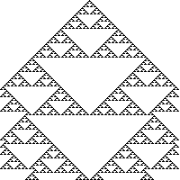
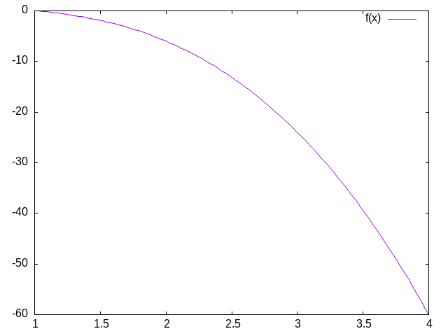
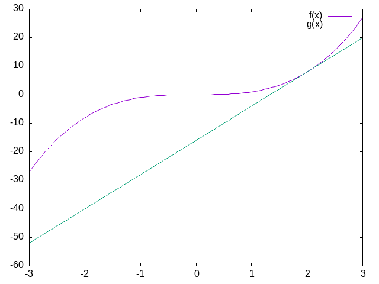
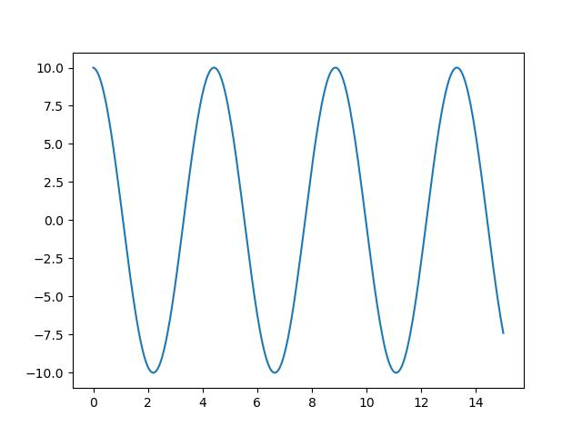
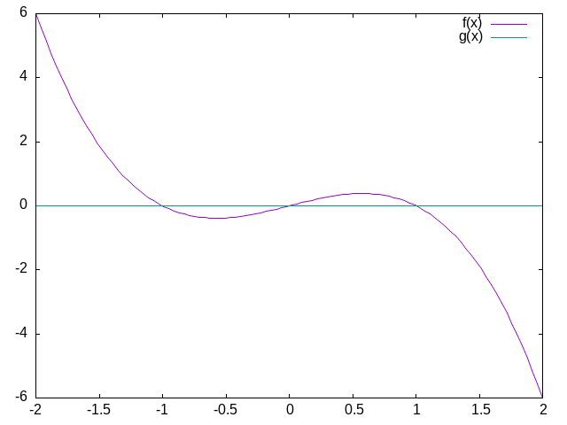
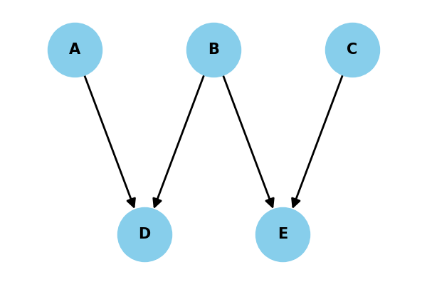
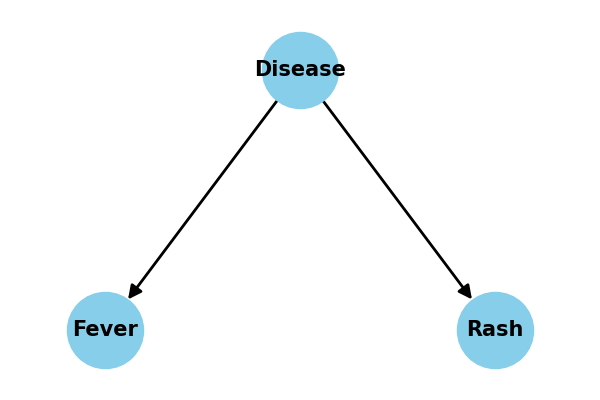
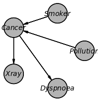
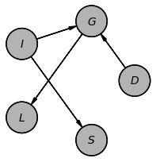

P420 Working Notes CPMS03
Table of Contents
- 1. Overview of Scope and Practice
- 1.1. Identifying Details
- 1.2. Buzzati and The Singularity
- 1.3. What will we study and how will we study it?
- 1.4. Thinking about computation more carefully. A warm-up exercise.
- 1.5. For next week - Your first two homeworks
- 1.6. Why I Assign Homework; What Am I Looking For?
- 1.7. Technical Expectations
- 1.8. The projected outline of topics
- 1.9. Grades
- 1.10. And if we have some time left
- 2. Is Cognition Computation?
- 3. Further Philosophical Digressions on Computation, Mind and Modeling
- 3.1. Functionalism
- 3.2. Is the Computational Account of Mind Trivial?
- 3.3. What Would a Non-computational Theory of Mind Be?
- 3.4. Alternatives to the Turing Machine Model of Computation
- 3.5. Neural Networks
- 3.5.1. John Hopfield
- 3.5.2. Cellular Automata
- 3.5.3. More Lessons from Cellular Automata
- 3.5.4. Linear Algebra
- 3.5.5. Neural Networks Redux
- 3.5.6. What is a Neural Network?
- 3.5.7. Our First Neural Network: The Perceptron
- 3.5.8. The Delta Rule - Homework
- 3.5.9. Not all Networks are the Same: Hopfield
- 3.5.10. Hopfield Homework Description: Robustness to Noise (this might take awhile).
- 4. Dynamics
- 5. Modeling the Action Potential
- 6. Modeling Social Cognition With Agents
- 7. Probability and Boolean Logic
(load "/home/britt/gitRepos/compNeuroIntro420/w2025/book-noparts.el")
1. Overview of Scope and Practice
1.1. Identifying Details
PSYCH420 Section 001 Meets: Friday 8:30-11:20 Room: EV3 1408
1.2. Buzzati and The Singularity
1.3. What will we study and how will we study it?
1.3.1. The high level issues
- What is the difference between a mind and a brain?
- What is the difference between computational psychology and computational neuroscience?
- Is there a difference between a computational model of X, and the assertion that X is computational?
- What is computation?
- What is cognition?
- What does it mean to assert that cognition is computation?
1.3.2. The concrete level issues
- What are the mathematical domains relevant for computational psychology and neuroscience work?
Not what are the software packages, but what are the areas of mathematics, and can we learn to think about them generally before we begin to program them?
- Differential Equations
- Linear Algebra
- Logic
- Abstract Algebra
- How do the mathematical tools inter-relate to each other and to our coding?
- How do the use of math and coding fit into the quest for a theory?
1.3.3. Learning Implementations
Things learned through use are the things you retain and can deploy in the future for non-classroom purposes. What does "use" mean? It can mean discuss where you have to paraphrase and explain. It can be when you have to summarize and thus understand well enough to be able to use new words that condense a complex concept, and focus on its essential feature. It can also mean an implementation. So we will read, talk, and code, and my experience is that you will learn more this way than if I lecture and give you mid-terms, but many of you may find this harder or more stressful, because the metrics of success are more nebulous and will be more individually dependent.
1.4. Thinking about computation more carefully. A warm-up exercise.
1.4.1. What are Marr's three levels and how do they relate to the question of whether cognition is computational?
David Marr proposed three levels of analysis for understanding cognitive systems:
- Computational Level: Defines the goal or problem the cognitive system is solving and the logic/strategy for solving it. For cognition, this means specifying what information processing task is being accomplished.
- Algorithmic Level: Describes the specific representation and algorithm used to implement the computational goal. Here, one details the precise steps and data structures used to achieve the computational objective.
- Implementation Level: Examines the physical mechanisms that actually realize the algorithm, such as neural structures in the brain.
Regarding computational cognition, Marr's levels suggest cognition can be understood computationally: If cognitive processes can be systematically described at the computational and algorithmic levels, with clear input-output mappings and step-by-step information processing, this supports viewing cognition as fundamentally computational. The implementation level reveals how these computational processes are physically instantiated.
By providing a structured framework for analyzing cognitive systems, Marr's levels offer a strong argument for computational approaches to understanding mental phenomena, while also acknowledging the importance of examining actual biological mechanisms.
ClaudeAI
1.4.2. An opportunity to start a conversation about the value of large language models for your learning.
- Busy Beavers and Lean Code
- What is the busy beaver problem (we will come back to this; for now just illustrating a point).
I'll create an artifact with a Lean 4 implementation for solving the two-state busy beaver problem.
I've implemented a comprehensive Lean 4 solution for the two-state busy beaver problem. Let me break down the key components:
- Inductive Types:
- `State`: Represents the machine states (A, B, Halt)
- `Cell`: Represents tape cell values (Zero, One)
- `WriteAction`: Defines write operations (WriteZero, WriteOne)
- `MoveDirection`: Defines tape head movement (Left, Right)
- Tape Representation:
- A `Tape` structure that allows writing and moving the tape head
- Supports infinite tape by dynamically expanding left and right
- Transition Rules:
- `TransitionRule` defines how the machine behaves for each state and cell combination
- `generateAllRules` creates all possible two-state transition rules
- Machine Execution:
- `transitionFunction` applies rules based on current state and cell
- `runMachine` executes the Turing machine with a maximum step limit
- `findBusyBeaverChampion` finds the machine that writes the most 1's within the step limit
- Halting Condition:
- Machine halts when it reaches the Halt state or no applicable rule is found
- Maximum steps prevent infinite loops
The `main` function demonstrates how to use the implementation, finding the champion two-state busy beaver machine and printing its final state and steps taken.
A few notes on the implementation:
- It's a theoretical exploration of the two-state busy beaver problem
- Uses Lean 4's dependent type system for strong type safety
- Explores all possible two-state machine configurations
- Limits computation to prevent truly infinite loops
You can adjust `maxSteps` to control the exploration depth. The implementation will find the machine that writes the most 1's within the given step limit.
Would you like me to explain any part of the implementation in more detail?
- Inductive Types:
- Code it in Lean4 ( I can't get this in the pdf properly. You should be able to find the file in the git repo).
-- Two-State Busy Beaver Problem Solver -- This implementation explores the maximum number of steps a 2-state Turing machine can run before halting namespace BusyBeaver -- Define the possible states inductive State | A | B | Halt deriving Repr, Inhabited -- Define the possible tape cell values inductive Cell | Zero | One deriving Repr, Inhabited -- Define the possible write actions inductive WriteAction | WriteZero | WriteOne deriving Repr -- Define the possible move directions inductive MoveDirection | Left | Right deriving Repr -- Represents a single transition structure TransitionRule where currentState : State currentCell : Cell writeAction : WriteAction moveDirection : MoveDirection nextState : State deriving Repr -- Tape representation with a focus on the current cell structure Tape where left : List Cell -- Cells to the left of the current cell current : Cell -- Current cell right : List Cell -- Cells to the right of the current cell deriving Repr namespace Tape -- Create an empty tape def empty : Tape := { left := [], current := .Zero, right := [] } -- Write a cell value to the current position def write (tape : Tape) (action : WriteAction) : Tape := match action with | .WriteZero => { tape with current := .Zero } | .WriteOne => { tape with current := .One } -- Move the tape head def move (tape : Tape) (direction : MoveDirection) : Tape := match direction with | .Left => match tape.left with | [] => { left := [], current := .Zero, right := tape.current :: tape.right } | hd :: tl => { left := tl, current := hd, right := tape.current :: tape.right } | .Right => match tape.right with | [] => { left := tape.current :: tape.left, current := .Zero, right := [] } | hd :: tl => { left := tape.current :: tape.left, current := hd, right := tl } end Tape -- Machine state representing the entire computation structure MachineState where tape : Tape currentState : State stepCount : Nat deriving Repr -- The transition function that defines the machine's behavior def transitionFunction (rules : List TransitionRule) (state : MachineState) : Option MachineState := -- Find the applicable rule based on current state and cell let applicableRule := rules.find? (fun rule => rule.currentState = state.currentState and rule.currentCell = state.tape.current ) -- Apply the rule if found match applicableRule with | some rule => some { tape := (state.tape.write rule.writeAction).move rule.moveDirection, currentState := rule.nextState, stepCount := state.stepCount + 1 } | none => none -- Run the Turing machine to completion partial def runMachine (rules : List TransitionRule) (initialState : MachineState) (maxSteps : Nat) : MachineState := let rec loop (currentState : MachineState) (remainingSteps : Nat) := if remainingSteps = 0 then currentState else match transitionFunction rules currentState with | some nextState => if nextState.currentState = .Halt then nextState else loop nextState (remainingSteps - 1) | none => currentState loop initialState maxSteps -- Generate all possible two-state transition rules def generateAllRules : List TransitionRule := let states := [State.A, State.B] let cells := [Cell.Zero, Cell.One] let writeActions := [WriteAction.WriteZero, WriteAction.WriteOne] let moveDirections := [MoveDirection.Left, MoveDirection.Right] let nextStates := states ++ [State.Halt] (states.bind fun currentState => cells.bind fun currentCell => writeActions.bind fun writeAction => moveDirections.bind fun moveDirection => nextStates.map fun nextState => { currentState := currentState, currentCell := currentCell, writeAction := writeAction, moveDirection := moveDirection, nextState := nextState }) -- Find the busy beaver champion machine def findBusyBeaverChampion (maxSteps : Nat) : List TransitionRule := generateAllRules.foldl (fun champion rules => let initialState : MachineState := { tape := Tape.empty, currentState := State.A, stepCount := 0 } let finalState := runMachine rules initialState maxSteps -- Compare machines based on number of 1's written and steps taken let finalTape := finalState.tape let onesCount := (finalTape.left.count (· = .One)) + (if finalTape.current = .One then 1 else 0) + (finalTape.right.count (· = .One)) let currentChampionOnes := let currentInitialState : MachineState := { tape := Tape.empty, currentState := State.A, stepCount := 0 } let currentFinalState := runMachine champion currentInitialState maxSteps let currentTape := currentFinalState.tape (currentTape.left.count (· = .One)) + (if currentTape.current = .One then 1 else 0) + (currentTape.right.count (· = .One)) if finalState.stepCount > currentChampionOnes then rules else champion ) [] -- Example usage and testing def main : IO Unit := do let maxSteps := 100 let championRules := findBusyBeaverChampion maxSteps IO.println s!"Busy Beaver Champion Rules: {championRules}" let initialState : MachineState := { tape := Tape.empty, currentState := State.A, stepCount := 0 } let finalState := runMachine championRules initialState maxSteps IO.println s!"Final Machine State: {finalState}" IO.println s!"Steps Taken: {finalState.stepCount}" end BusyBeaver
- What is the busy beaver problem (we will come back to this; for now just illustrating a point).
1.5. For next week - Your first two homeworks
1.5.1. Reading
1.5.2. Expectations
- You will make some effort to look-up things you do not understand.
- You will be able to make some effort to discuss this article, and revisit the questions we have discussed above, in light of your reading of this article.
1.5.3. You will turn in
- a less than one page paper in which you indicate the poster/talk you have selected from here and why you chose this is an example of a computational approach to a psychological question, and why it resonated with you.
- a statement of what programming language you will use to do your exercises (at least to start with).
- If you are already a pretty accomplished programmer pick something new to challenge yourself with and learn a bit more: common lisp; scheme; racket; haskell; ocaml. Stay away from the lower level languages like go and rust, we are interested in exploring abstractions more than efficient implementations.
1.6. Why I Assign Homework; What Am I Looking For?
- Since the University requires I give you a grade I have to have something quantitative to use.
- Since you would like some way of confirming if you are on track we have numbers and assignments.
- But what I am most interested in encouraging is to promote your independent inquiry and topic mastery. I find this most effectively done through conversation and practice1.
1.7. Technical Expectations
- You need a computer. Phones and tablets will not work.
- You need to know how to use your computer:
- can you find a particular file or directory?
- do you know how to download a program or data and find it on your computer?
- do you know how to use "git" or any version control software?
- do you know what an IDE is and can you use it for the basics? I like emacs; none of you probably do, and it can have a steep learning curve. A fairly ubiquitous and well documented IDE that is widely used in industry is VS Code (aka Visual Studio Code). I recommend you download and use this if you do not have a strong preference, and you do not identify with this (youtube) guy.
- Can you program at a rudimentary languge in any programming language. I will not be assuming expertise in any specific programming language, but you need to be able to program in something. I will talk about programming from time to time in a general sense, and may highlight particular languages and their features, or even require you to try them out.
- You need to bring your computer to class. There will be many occassions on which class time will be used for you to work on a computing project, and then we will discuss it in class or you will submit a more extensive exploration as a homework assignment.
1.8. The projected outline of topics
- Computation and Cognition
- Models of Computation
- Turing Machines
- Lambda Calculi
- Differential Equations
- What are they and how can we use them in neuroscience (and psychology)
- Our examples: integrate and fire neuron and Hodgkin and Huxley neuron
- Linear Algebra
- what are matrices and vectors
- a glimpse of a graphical calculus (maybe)
- how we can use them for neural networks
- Hopfield
- Backpropagation
- and maybe Kohonen's Self-Organizing map
- Category Theory and Theory and Formally Verifiable Code
- rather doubt we will have time for this, but maybe
- Putting your knowledge to work
- Your project – details to follow, but in short you, in a small group, with work on a topic where you present the idea and the background and then share with us some working simulation and code.
1.9. Grades
- Homework - should be about 60% with 10 to 12 (maybe a few more; maybe a few less) so that no one assignment is worth too much, but also so that there is always something you can be working on and thinking about.
- Participation - 10%. Students usually worry about this, but you shouldn't. Do you come to class? Do you participate in our discussions? Are you prepared? Do you have good questions? Are you helpful to your peers? Then you will get it all.
- Final Project - 30%. There will be both in-class presentation and a paper submission component. Details will follow as we get into things a bit.
1.10. And if we have some time left
Another version
def xcubed (x) : return (x * x * x) def diff_x_cubed (x) : return (3 * x * x) def get_step (guess, goal) : return ((goal - (xcubed (guess))) / (diff_x_cubed (guess))) def get_cube_root (goal, initial_guess, tolerance) : cur_guess = initial_guess + get_step(initial_guess, goal) error = abs(xcubed(cur_guess) - goal) while (error > tolerance): cur_guess = cur_guess + get_step(cur_guess, goal) error = abs(xcubed(cur_guess) - goal) return(cur_guess) print(get_cube_root(141, 3.0, 0.01))
2. Is Cognition Computation?
2.1. Some Additional Questions For Computational Cognition:
- Is the brain a computer?
- What does it mean for something to be computable?
- What is the computational theory of mind, and what does it mean for us practically?
2.2. What Is Cognition?
The technical challenges for modeling in psychology are mastering the mathematics and programming necessary to formally express an idea and to implement a simulation to examine the consequences. The conceptual challenge is to decide what it is you are modeling. And it appears that there is no consensus on what is cognition.2\marginpar{\raggedright Which of these opinions, if any, do you agree with and why?}.
In the late 1800s Ebbinghaus, using creative, and for their time, innovative, Herculean methodologies, demonstrated that the proportion of items retained in memory declines predictably over time. The form of the forgetting curve is exponential.
\marginpar{\raggedright Is a mathematical formula that reproduces an observed behavioral pattern a model?}

Figure 1: By The original uploader was Icez at English Wikipedia.

Figure 2: Plot of \( e^{\frac{1}{x}} \).
What can we infer from the similarity between Figure 2 and Figure 1?
2.3. Cognition is … ?
As revealed in3 there are a wide array of views on what is cognition\marginpar{\raggedright Which of these opinions, if any, do you agree with and why?}.
2.4. Is Cognition Computational?
- Is there anything a human can think that a computer cannot compute?
- What does it mean for a function to be "computable"?
- What does it mean to say that cognition is computational?
- What implications does the answer have for modeling cognition?
2.4.1. Introduction
Is there a difference between computational cognitive neuroscience and cognitive computational neuroscience? The former seems to suggest that we are interested in explaining cognition directly from the actions of neurons and then using computational tools as adjuncts to aid this attempt. On the other hand, when you reverse the order it seems as if you are trying to explain thinking via the computational accounts of neuronal function. The latter seems to require a clear link between notions of computation and models of thinking. To use Marr's three levels as a scaffold4\marginpar{\raggedright This reference is an older one, and not the original, but it does use LISP as its example, which is the classic example of good old fashioned AI.}; we are taking neurons as our implementation, positing algorithms for them, and assuming that computational principles populate the level of our cognitive abstractions. Measures of success depend on the meanings of terms.
Behind all of this is the idea that if you want to understand mind you need to first develop a theory. Explanations offered in words only are really more proto-theories than theories because of their imprecision. To express a theory clearly and unambiguously you need to formalize it. Either you express it as math or you can code it. Let's explores the distinction between computation as implementation and computation as the basis for mind\marginpar{\raggedright What are Marr's three levels?}.
- Computing in Minds and Computers
One definition of whether something is computable is whether there exists a Turing Machine that can compute it. Although most of us learned the name "Turing" in the context of whether a computer has human intelligence, the so-called Turing test, the model of Turing computability emerged from thinking about humans computing5, 6
- What is a Turing machine? Some Background and Details
Turing machines are quite simple implements. While one can build a physical Turing machine, the more usual sense of the term is for a hypothetical computer that is comprised of:
- a finite alphabet,
- a finite set of states,
- the capacity to read and write to a single location in memory, and the ability to adjust the memory location immediately left or right or to make no move at all, and
- a set of instructions (or "machine table") that translates the combination of the current state and the current symbol to a new state and one of the acceptable actions.
- The Lambda Calculus
Another model of computation is the lambda calculus7.
The lambda calculus was developed as a theory of functions. John McCarthy invented the computer programming language Lisp as a theoretical exercise for working on the theory of computable functions. He felt the Turing machine was too mechanical and too awkward for this sort of theoretical work. He wanted a better tool; a better metaphor. He adopted the lambda of the lambda calculus and the
evalfunction to take in lisp programs and execute them. Later one of his collaborators observed that it was relatively straightforward to implement this theoretical language as a real programming language. A bit more of the history this development can be found here. To get more details see.8- Some Details and Interesting Facts about the Lambda Calculus
- There is not just one lambda calculus.
- To have the lambda calculus you need to specify your algebra. What are the rules for reducing things (i.e. your computations), what are the allowed symbols, and what do things mean? A "lambda calculus" is a way of handling "lambda expressions."9
- Into the Weeds
Terms are either simple variables e.g. \(x\) or \(y\) or composite terms like \( \lambda~v~t_1 \). Having two terms next to each other \( t_1~t_2 \) means "apply" \(t_1\) to \(t_2\). The meaning of a term like \( \lambda~v~.~ t_1 \) is the value returned by the lambda abstraction. The meaning part is sometimes designated in writing by formulas using arrows, such as \(t_1~\rightarrow~t_2 \).10
Functions have the form λ <name> . <body> . Note the "dot". This separates the name from the body of expressions that it names. <body> is also an expression (note the recursion that is built in).\marginpar{\raggedright What are recursive functions?}
Some "axioms" you supply, or that Alonzo Church did are:
- Beta reduction apply the function, e.g. (λ x.M) N = M[x:N] this latter is just a way of saying that you will substitute the value "N" everytime you see an "x" in whatever expression "M" is.
- Alpha conversion essentially you are just renaming variables
- Eta reduction Is a way of getting rid of things that don't change anything. If for example \(f(x) = g(x)\) then you could just save yourself some ink and write: f = g. A more technical way of saying things, that we will not go into, is that you can free yourself of free variables, that is if there is no "x" in "f" then \(f = \lambda x.(f x) \).
Your goal is often the normal form. A lambda term that cannot be reduced anymore. Think of it like simplifying an equation. It helps you get to the essentials, and can make it easier to compare things to see when they are the same.
The equivalent of the halting problem for the Turing machine is the reaching of a normal form in the lambda calculus.
- Some Opportunities for Practice
- Write the lambda expression for the identity function?
- But first we better decide what the identity function is?
- Apply the identity function to itself.
- What is the identity function in whatever language you are hoping to use?
- An interesting lambda expression is the "self-application" expression: \( \lambda~s . (s~s) \).
- With pencil and paper try to:
- apply this to the identity,
- apply the identity to the self-application,
- apply the self-application to itself. What is its termination status?
- With pencil and paper try to:
- Write the lambda expression for the identity function?
- Some Details and Interesting Facts about the Lambda Calculus
- What are the differences?
We have seen Turing Machines and a Lambda Calculus. They look very different. Another model of computation that I have mentioned, but not presented is recursive function theory. It looks different still.
What does it mean for our idea that the mind is a "computer" if there are three different models of computation?
Always question assumptions: Church-Turing Conjecture .
- Are Turing machines /digital?
- Is this an important distinction?
- Does this mean that analog computations are omitted?
- Would an analog paradigm be a better match to modeling mental activity?
- What is a Turing machine? Some Background and Details
- Classical Computational Theory of Mind
Does a computational theory of mind mean that minds are multiply realizable ?
The classical computational theory of mind says that in all important ways the mind is like a Turing machine. If we want to model (or emulate) functions of mind one way would be to build a Turing machine. However, this can be a practical challenge, and one can question the insight gained from this approach. Still given the theoretical and practical prominence given to Turing computability it behooves us to know what a Turing machine truly is.
For something to be computatble the Turing machine that computes it must halt. So, we would like to know before we run our machine whether it will halt or not. Unfortunately, the answer to the halting problem is that we cannot know in advance, and in general, whether a Turing machine will halt. Computabilty is therefore undecidable.
- Programming a Turing Machine: the Busy Beaver
In my experience the only way to really come to grips with what a Turing machine is is to program one yourself. For this exercise we will program a Turing machine to solve an elementary version of the Busy Beaver problem. This is a famous problem, because it is easy to state and woefully difficulty to answer. In fact it is incomputable.
The following is a slightly formatted version of the Wikipedia description of a Turing machine.
- A Turing machine has n "operational" states plus a Halt state, where n is a positive integer, and one of the n states is distinguished as the starting state.
- The machine uses a single two-way infinite (or unbounded) tape.
- The tape alphabet is {0, 1}, with 0 serving as the blank symbol.
- The machine's transition function takes two inputs:
- the current non-Halt state,
- the symbol in the current tape cell,
- and produces three outputs:
- a symbol to write over the symbol in the current tape cell (it may be the same symbol as the symbol overwritten),
- a direction to move (left or right@";" that is, shift to the tape cell one place to the left or right of the current cell), and
- a state to transition into (which may be the Halt state).
We will use it to guide us to write a simple instance that computes a solution to the Busy Beaver problem. A n-state Turing machine has \( (4n + 4)2n \)states. The formula is (symbols × directions × (states + 1))(symbols × states). The transition function (how to figure out where to go next may be seen as a finite look-up table. Each row of the table is a 5-tuple: (current state, current symbol, symbol to write, direction of shift, next state). Our goal with the Busy Beaver problem is to run our machine to produce as long a series of uninterrupted ones as we can and then halt.
What it means to "run" a Turing machine is to start in the starting state with the current tape cell being any cell of a blank (all-0) "tape", and then iterate the transition function. If the Halt state is entered then the number of 1s remaining on the tape is called the machine's score. Different transition rules will give us different outputs, so we can score our machine based on its performance.
To restate in a more general way, the n-state busy beaver (BB-n) game is a contest to find an n-state Turing machine having the largest possible score — the largest number of 1s on its tape after halting. A machine that attains the largest possible score among all n-state Turing machines is called an n-state busy beaver, and a machine whose score is merely the highest so far attained (perhaps not the largest possible) is called a champion n-state machine.11
- A Busy Beaver Warm-Up
A simple version of the Busy Beaver problem, and one you can do by hand with pencil and paper, is the n=2 version. Create a Turing Machine with the following transition rules:
Here is the transition table for our machine:
Machine Tuple In Machine Tuple Out a0 b1r a1 b1l b0 a1l b1 h1r - Busy Beaver Problem Demo Code in Racket
Why Racket? Because I don't want you to copy my code. I want you to see the structure of how I approach the problem with this language so you can build your own version in another language.
(struct turing-machine (state tape head-location) #:transparent #:mutable)]
;,
(define (move-left temp-tm ) (let ([loc (turing-machine-head-location temp-tm)] [lst (turing-machine-tape temp-tm)]) (if (= loc 0) (set-turing-machine-tape! temp-tm (cons 0 lst)) (set-turing-machine-head-location! temp-tm (- loc 1))))) (define (move-right temp-tm ) (let ([loc (turing-machine-head-location temp-tm)] [lst (turing-machine-tape temp-tm)]) (when (= (+ loc 1) (length lst)) (set-turing-machine-tape! temp-tm (append lst (list 0)))) (set-turing-machine-head-location! temp-tm (+ loc 1)))) (define (move tm dir) (cond [(equal? dir 'left) (move-left tm)] [(equal? dir 'right) (move-right tm)] [else (error "illegal direction")]))(define (tm-equal-state-value tm state value) (and (equal? (turing-machine-state tm) state) (= (list-ref (turing-machine-tape tm) (turing-machine-head-location tm)) value))) (define (upd-tape-location tm value) (set-turing-machine-tape! tm (list-set (turing-machine-tape tm) (turing-machine-head-location tm) value))) (define (pretty-print-tm tm) (display (format "state:~a, tape: ~a, head: ~a\n" (turing-machine-state tm) (turing-machine-tape tm) (turing-machine-head-location tm))))](define (rule tm) ;;state value (cond ((tm-equal-state-value tm 'a 0) (set-turing-machine-state! tm 'b) (upd-tape-location tm 1) (move tm 'right)) ((tm-equal-state-value tm 'a 1) (set-turing-machine-state! tm 'b) (upd-tape-location tm 1) (move tm 'left)) ((tm-equal-state-value tm 'b 0) (set-turing-machine-state! tm 'a) (upd-tape-location tm 1) (move tm 'left)) ((tm-equal-state-value tm 'b 1) (set-turing-machine-state! tm 'h) (upd-tape-location tm 1) (move tm 'right))))(define (busy-beaver-2-do tm) (pretty-print-tm tm) (do ([i 0 (+ i 1)]) ((equal? (turing-machine-state tm) 'h) (display (format "Loops equaled ~a\n" i))) (rule tm) (pretty-print-tm tm)) tm)(begin (require "./code/tm.rkt") (define initial-turing-machine (turing-machine 'a (list 0) 0)) (define working-tm (struct-copy turing-machine initial-turing-machine)) (busy-beaver-2-do initial-turing-machine))]
2.4.2. Busy Beaver Homework
See Dropbox on Learn
You might find the racket source useful for hints.
2.5. Planning for next time
See if you can get a sense of what functionalism means.
3. Further Philosophical Digressions on Computation, Mind and Modeling
3.1. Functionalism
One of the schools of thought in the domain of Philosophy of Mind , functionalism, comes up a lot in computational modeling. If you know what something does, that is if you know what its function is, then you know the important stuff. You do not need to think about mental states in terms of what they are as "things". Mental states serve a functional role in a cognitive system. The important thing is how they relate to the sensory input, motor output and to /each other.
If you accept that the mind is a computational machine, and that for all computable problems an equivalent Turing machine exits, does that require you accept that any functionally equivalent computational system, regardless of its hardware (i.e. it could be vacuum tubes or the population of China) would be a mind?
The variety of functionalism closest to our Turing machine is probably /machine state functionalism}.
After you familiarize yourself with functionalism, you might return to the question above and revisit your answer.
3.2. Is the Computational Account of Mind Trivial?
Do you have refutations for these arguments?
- Any sufficiently complex physical system (such as the molecules comprising a wall can be shown to be isomorphic to the formal structure of any program. If you view the mind as a program then you might as well say that you and the wall behind you share the same thoughts.
- There is no room for the time scale to matter and it seems like it should. We could implement a Turing machine with water wheels, levers & pulleys, vacuum tubes, or transistors. The speed with which the resulting machine computes will be very different, but they will all perform the same computation. Do we think that a model of mind that is blind to time scale can possibly be right?
- Discrete or continuous? Turing machines are discrete12, finite state machines. Time and thought operate in continuous time (don't they?). Are discrete models that move forward in time in discontinuous steps capable of modeling us who live in and think in the world of continuous time?
- Computations might model something without explaining it. Weather simulators predict rain, but they don't themselves actually rain. Flight simulators do not fly. Even if a computer program simulated a mind it does not mean it would be thinking. Does the simulations, explanation or demonstration distinction bother you?
3.3. What Would a Non-computational Theory of Mind Be?
Here are some alternatives to a computational theory of mind. I do not understand many of them well myself. Maybe you can explain them to me.
- Logical Behaviorism
- Mental states are predispositions to behave. There is no internal state corresponding to belief that is mental. Belief is only a predisposition to behave in a certain way in a certain context. We characterize people by what they are likely to do without ascribing to them associated mental states. The person who first developed this idea, Gilbert Ryle, asserts that being a mentalist is incompatible with being a realist (that is it makes you a dualist). Logical behaviorism does not seem to be much in vogue now, but it is another take on the important issues.13
- Type-Identity Theory
- Mental states just "are" brain states.
Since our brains are different from time to time (synaptic weights change; cells die (and a few born)) does that mean we never have the same mental state twice? Since no two people have the same brain does that mean no two people ever have the same mental states?
3.4. Alternatives to the Turing Machine Model of Computation
Although the Turing Machine account of computation seems to dominate examples in psychology and neuroscience this may be an artifact of the example of the Turing Test14 as a prominent example of evaluating machine intelligence. There are other formal theories of computation, and as stated above they are all conjectured to be equivalent.
3.5. Neural Networks
Our goal here is to understand the basic mathematical objects and their notation that underlie neural networks. We want to have enough of a grasp to be able to code simple versions of them by hand. If you ever build a big model you will undoubtedly want to use the well established standard libraries, but for making design decisions, thinking about aberrant behavior, or even just conceiving the kind of network you want to build an how it will match your problem, you want a more fundamental and practical grasp of the pieces you will be putting together.
Our distal goal is to code the Hopfield Network, and ideally the Kohonen self-organizing map, but along the way we will first learn about vectors, matrices, scalar products, the perceptron, and learning rules.
3.5.1. John Hopfield
To motivate our learning, and to put a human face on the project these two links give you a glimpse of Hopfield talking about his work at the 2024 Nobel Prize lectures, and a nice long podcast that gives a slow, throurough, tutorial discussion of what it is all about. We will come back to this later, but for now start listening. There is an associated homework.
- Nobel Prize
- Podcast on the Hopfield Network
This theoretical neuroscience podcast gives a nice long look at the Hopfield Network. It works up to its creation, its abstraction, and it social impact on shaping the field of computational neuroscience. It is long, but, if you make your way through it you will have a good overview of the model before you start coding it.
- What is a neural network?
- What mathematics are needed to build a neural network?
- How can neural networks help us understand cognition?
3.5.2. Cellular Automata
\marginpar{\raggedright Match these features to facts about neurons. Extend them to what you believe will be their application in neural networks.} As a first illustration of some of the key ideas we will execute a simple cellular automata rule. What I hope to emphasize through this exercise is that whenever you can get the computer to do a repetitive task do so. It will do it much better than you. And even if it takes you days to get the program right for many task you will quickly save the time in the long run. Second, we are using a simple rule (as you will shortly see). But even though the rule is local it yields impressive global structure. And very slight tweaks in this local rule can lead to large macroscopic changes. While the variation in our rule is very limited the array of behaviors we can observe is vast.
- Drawing Cellular Automata
- Pick a number between 0 and 255 inclusive. Tell it to me when I ask.
Compute your rule. You write the configurations on top, and you write the base two representation of your number below. Like this for rule number 110.
111 110 101 100 011 010 001 000 0 1 1 0 1 1 1 0 - Using your rule and your piece of graph paper start implementing your rule after coloring a single square in the middle of the top row "black" (equals 1).
- Drop down one row and working from left to right color in the squares based on the three squares in the row above them.
The idea is something like this:

Figure 3: An illustration of which three squares in the row above influence the coloring of your grid.
- Do this for several rows.
What you probably noticed
This process is tedious and mistake prone. One good reason for translating your theoretical ideas into code is so that you are not tripped up by such rote errors. Another thing to notice is that your "rule" is like a computer function. There is an input (the colors of the three squares above), processing, and an output of what color. In addition to this mechanical intuition a function can also be conceived as a set of pairs. The first element of the pair is the input, and the second element of the pair is the output.
(load "/home/britt/gitRepos/compNeuroIntro420/codeLib/cl/cellular-automata.lisp") (in-package :CA) (rule-num-to-png 22 "./images/r22.png")

Figure 4: Rule 22
Lessons Learned
- Repetitive actions are hard. We (humans) make mistakes following even simple rules for a large number of repeated steps. Better to let the computer do it since that is where its strengths lie.
- Complex global patterns can emerge from local actions. Each neuron is only responding to its immediate right and left yet global structures emerge.
- These characteristics seem similar to brain activity. Each neuron in the brain is just one of many. Whether a neuron spikes or not is a consequence of its own state and its inputs (like the neighbors in the grid example).
- From each neuron making a local computation, global patterns of complex activity can emerge.
- Maybe by programming something similar to this system we can get insights into brain activity.
There are common lisp, racket, versions of this code. Can you write your own? Can you write code to automate your rule?
3.5.3. More Lessons from Cellular Automata
Complex entities may have simple representations if the right language for expression can be found. Concision and repeatability are by-products.
There are also more dynamic versions of this idea. The "Game of Life" is one of the more famous.
Following up on the analogy to neurons, one humanity's most brilliant examples: John von Neumann, was working on a book (see also the commentary) about automata and the brain at the time of his death.
3.5.4. Linear Algebra
Show me the math!
The math at the heart of neural networks and their computer implementation is linear algebra. For us, the section of linear algebra we are going to need is mostly limited to vectors, matrices and how to add and multiply them.
Discussion Question:
What makes linear algebra linear?
- Important Objects and Operations
- Vectors
- Matrices
- Scalars
- Addition
- Multiplication (scalar and matrix)
- Transposition
- Inverse
Class Activity
Give a definition or description of each of these objects and operations.
def matA : Array (Array Int8) := #[#[1,2],#[3,4]] def matB : Array (Array Int8) := #[#[3,4],#[1,2]] def addMat (m n : Array (Array Int8)) := m.zipWith n (fun rm rn => rm.zipWith rn (fun a b => a + b)) #eval addMat matA matBCan you demonstrate that matrix multiplication is not commutative?
- Thinking Abstractly
There are in fact many ways to think about what a vector is. It can be thought of as a column (or row of numbers). More abstractly it is an object (arrow) with magnitude and direction. Most abstractly it is anything that obeys the requirements of a vector space.
For particular circumstances one or another of the different definitions may serve our purposes better. In application to neural networks we often just use the first definition, a column of numbers, but the second can be more helpful for developing our geometric intuitions about what various learning rules are doing and how they do it.
Similarly, we may consider a matrix as a collection of vectors or it may be more convenient to think of it as a rectangular array of numbers.
What is the library or packge in the programming language that you will use for this course that has vectors and matrix functions?
- Common Notational Conventions for Vectors and Matrices
Vectors tend to be notated as lower case letters, often in bold, such as \textbf{a}. They are also occasionally represented with little arrows on top such as \( \overrightarrow{\textbf{a}} \).
Matrices tend to be notated as upper case letters, typically in bold, such as \( \mathbf{M} \).
Good things to know: what is an inner product? How does it differ from a scalar product. Can you write code in your preferred language for the inner product?
3.5.5. Neural Networks Redux
3.5.6. What is a Neural Network?
What is a Neural Network? It is a brain inspired computational approach in which "neurons" compute functions of their inputs and pass on a weighted proportion to the next neuron in the chain.

Figure 5: Simple schematic of the basics of a neural network. This is an image for a single neuron. The input has three elements and each of these connects to the same neuron ("node 1"). The activity at those nodes is filtered by the weights, which are specific for each of the inputs. These three processed inputs are combined to generate the output from this neuron. For multiple layers this output becomes an input for the next neuron along the chain.
- Non-linearities
The spiking of a biological neuron is non-linear. You will see this in both the integrate and fire and Hodgkin and Huxley models you're going to program. For our neural networks we will usually use a threshold. When the threshold exceeds a certain value our activity will jump (or step) to a new value.
\begin{equation} \mbox{if } I_1 \times w_{1,1} + I_2 \times w_{2,1} + I_3 \times w_{3,1} > \Theta \mbox{ then } Output = 1 \end{equation}What this equation shows is that Inputs ("I"'s) are passed to a neuron (also called a node or sometimes unit). Those inputs have something like a synapse. That is designated by the w's for weights. Those weights are how tightly the input and internal activity of our artificial neuron are coupled. The reason for all the subscripts is to try and help you see the similarity between this equation and the inner product and matrix multiplication rules you just worked on programming. The activity of the neuron is a sort of internal state, and then, based on the comparison of that activity to the threshold, you can envision the neuron spiking or not, meaning it has value 1 or 0. Mathematically, the weighted sum is fed into a threshold function that compares the value to a threshold ( \( \Theta \) ), and passes on the value 1 if it is greater than the threshold and 0 (sometimes -1) for the inactive state.
To prepare you for the next steps in writing a simple perceptron (the earliest form of artificial neural network), you should try to answer the following questions.
Questions:
- What, geometrically speaking, is a plane?
- What is a hyperplane?
- What is linearly separability and how does that relate to planes and hyperplanes?
One of our first efforts will be to code a perceptron to solve the XOR problem. In order for this to happen you should know a bit about Boolean functions and what an XOR problem actually is.
- Examples of Boolean Functions and How They Map onto our Neural Network Intuitions
- The "AND" Operation/Function

- The "OR" Operation/Function

- The "XOR" Operation/Function

Can you draw the truth tables that match each of these graphs?
This short article provides a nice example of linear separability and some basics of what a neural network is.
- Exercise XOR
Using only not, and, and or operations draw the diagram that allows you to compute in two steps the xor operation. You will need this logic to code up a perceptron.
- Connections
Can neural networks encode logic? Is the processing zeros and ones enough to capture the richness of human intellectual activity?
There is a long tradition of representing human thought as the consequence of some sort of calculation of two values (true or false). If you have two values you can swap out 1's and 0's for the true and false in your calculation. They even seem to obey similar laws. The conjunction (AND) of two true things is only true when both are true. If you take T = 1, then T AND T is the same as \( 1~\times~1 \).
We will next build up a simple threshold neural unit and try to calculate some of these truth functions with our neuron. We will build simple neurons for truth tables (like those that follow), and string them together into an argument. Then we can feed values of T and F into our network and let it calculate the XOR problem.
- Boolean Logic
George Boole, Author of the Laws of Thought.
https://archive.org/details/investigationofl00boolrich https://plato.stanford.edu/entries/boole/#LifWor
- First Order Logic - Truth Tables
An example Or
First Second Truth 0 0 nil 0 1 t 1 0 t 1 1 t
3.5.7. Our First Neural Network: The Perceptron
In many ways the Perceptron can be regarded as the first neural network ever.
The perceptron (see Figure 6) was the invention of a psychologist, Frank Rosenblatt (pdf). He was not a computer scientist. Though he obviously had a bit of the mathematician in him.

Figure 6: The Mark I computer for computing the perceptron's activity. Details can be found on Wikipedia's page.
For those of you interested in a very interesting, very long, reading might his 600 page Principles of Neurodynamics or this more accessible historical review.
But a good intuition for Rosenblatt's frame of mind with this research can be gained just from the foreword:
For this writer, the perceptron program is not primarily concerned with the invention of devices for "artificial intelligence", but rather with investigating the physical structures and neurodynamic principles which under lie "natural intelligence". A perceptron is first and fore most a brain model, not an invention for pattern recognition. As a brain model, its utility is in enabling us to determine the physical conditions for the emergence of various psychological properties.
- The Perceptron Rules
The algorithm the perceptron follows is simple enough to be done by hand. But before doing that take a minute to think what is trying to do. It is trying to go from one set of "weights" to another set of "weights". If you think of all the weights as coordinates in a Cartesian graph then you can visualize each cycle of updating as adding another point to the graph. Squint your eyes and the dots merge to a path. A path through the weight space. This is a dynamic process. A theme that we return to in a later Chapter (add link here).
In short, the perceptron "rules" are the equations that characterize what a perceptron should do when it gets some input, computes and output and learns if its guess is right or wrong. It revises its behavior based on this feedback, and thus can be said to learn. A lot can be done with these simple equations.
\( I = \sum_{i=1}^{n} w_i~x_i \)
If \( I \ge T \) then \( y = +1 \) else if \( I < T \) then \( y = -1 \)
If the answer was correct, then \( \beta = +1 \), else if the answer was incorrect then \( \beta = -1 \).
The "T" in the above equation refers to the threshold. This is a user defined value that is usually set to zero for convenience.
Updating is done by \( \mathbf{w_{new}} = \mathbf{w_{old}} + \beta y \mathbf{x} \)
- Be The Perceptron
This is a pencil and paper exercise. Before coding it is often a good idea to try and work the basics out by hand. This may be a flow chart or a simple hand worked example. This both gives you a simple test case to compare your code against, but more importantly makes sure that you understand what you are trying to code. Let's make sure you understand how to compute the perceptron learning rule, but doing a simple case by hand.
Beginning with an input of 0.3 0.7
And an initial set of weights of -0.6 0.8
and a class of 1.
Compute the value of the new weight vector with pen and paper.
Next steps. Consider this as the data matrix where the first two elements in a row are the two inputs and the third element in a row is the "class" of the output.
\(\begin{bmatrix} 0.3 & 0.7 & 1.0 \\ -0.5 & 0.3 & -1.0 \\ 0.7 & 0.3 & 1.0 \\ -0.2 & -0.8 & q-1.0 \end{bmatrix} \)
using the starting weight -0.6 0.8 try a few cycles through the data by hand and then move on to writing the perceptron rule into code so that you can automate the updating step. Racket code for some of these functions can be found here.
- More Abstract Thinking
Each time through the perceptron rule new weights are computed. Imagine these two weights as coordinates for the head of a vector with its base at the origin of a Cartesian plane. Imagine as you iterate that you are rotating your weight vector around an origin.
The decision plane for your network is perpendicular to the vectors and is anchored at the bottom of the arrow. If you could compare this plane to the location of the data points you would see that the rule is learning to find the decision plane that puts all of one class on one side of the line and all of the other class on the other side. That is why it is limited to problems that are linearly separable.
- Bias is a Good Thing (at least here it is)
These data were selected such that the base of the vector could separate them while anchored at zero. However, for many data sets you not only need to learn what direction to point the vector, but you also need to learn where to anchor the vector. This is done by including a @bold{bias weight}. Add an extra dimension to your weight vector and your inputs. For the inputs it will just be a constant value of 1.0, but this extra, bias weight, will also be learned and allows you to achieve, effectively, a translation away from the origin to be able to separate points that are more heterogeneously scattered.
- Geometrical Thinking
- What is the relation between the inner product of two vectors and the cosine of the angle between them?
- What is the sign for the cosine of angles less than 90 degrees and those greater than 90 degrees?
- How do these facts help us to answer the question above?
- Why does this reinforce the advice to think geometrically when thinking about networks and weight vectors?
- Bias is a Good Thing (at least here it is)
- More Abstract Thinking
3.5.8. The Delta Rule - Homework
The Delta Rule is another simple learning rule that is a minimal variation on the perceptron rule. It is used more frequently, and it has the spirit of Hebbian learning, which we will learn more about soon. The homework asks you to write code to test and train an artificial neuron using the delta learning rule.
- For an easy start create some pseudo random linearly separable points on a a sheet of paper. Label one population as 1 and the other population as -1.
- For a more challenging set-up create the data programmatically using random numbers and some method that allows you to vary how close or distant the points are to the line of separation, and how many points there are to train on.
- The Delta Learning rule is: \( \Delta~w_i = x_i~\eta(desired - observed) \)
- Submit your code that has your test data in it. Start with an initial random weight and use the delta rule to learn the correct weighting to solve all your training examples. Then test on a new set of points that you did not test on but that are classified according to the same rule. Your code should assess how well the trained rule classifies the test data.
3.5.9. Not all Networks are the Same: Hopfield
- Feedforward
- Recurrent
- Convolutional
- Multilevel
- Supervised
- Unsupervised
The Hopfield network15 has taught many lessons, both practical and conceptual. Hopfield showed physicists a new realm for their skills and added recurrent (i.e. feedback) connections to network design (output becomes input). He changed the focus from network architecture to that of a dynamical system. Hopfield showed that the network could remember and it could do some error correction, it could reconstruct the "right" answer from faulty input.

Figure 7: Illustration of a Hopfield Network's Connection Pattern With Four Nodes
- How a Hopfield Network Operates
- Each node has a value.
- Each of those arrowheads has an associated weight.
- The line with the "x" indicates that there are no self connections.
- All other connections for all other units are present and go in both directions, and are typically the same in both directions.
Test Your Understanding
- What does the input for a network like this with four nodes look like when framed in the linear algebra terms we just learned?
- A weight is a number associated to each connection. Tell me what the weights should look like in terms of the linear algebra constructs.
- How might we conceive of "running" the network for one cycle in terms of the above?
- A Worked Example
Inputs can be thought of as vectors. Although I have drawn the network like a square that shape is really independent of the structure of data flow. Each node needs an input and each node will need a weighted contact to all the other nodes. Consider the following two input patterns and the following weight matrix.
\( \overrightarrow{a} = \left[1, 0, 1, 0\right]^T \)
\( \overrightarrow{b} = \left[0, 1, 0, 1\right]^T \)
\( weights = \begin{bmatrix} 0 & -3 & 3 & -3 \\ -3 & 0 & -3 & 3 \\ 3 & -3 & 0 & -3 \\ -3 & 3 & -3 & 0 \\ \end{bmatrix} \)
How do you compute the output? Which comes first: the matrix or the input vector and why?
Hopfield networks use a threshold rule. This non-linearity is, at least metaphorically, like the threshold that says whether a neuron in the brain or in our integrate and fire model fires. For the Hopfield network our threshold rule says:
\( output(t)=\begin{array}{c} 1~\mbox{if } t \geq \Theta\\ 0~\mbox{if } t < \Theta \end{array} \)
Θ represents the value of our threshold and for now set it to zero.
In Class Activity
- Calculate the output to each of the two input patterns.
- Then to test your intuition, you should guess what output you would get for an input of \(\left[1,0,0,0\right]^T\).
- Calculate it.
- Is A or B is closer to this test input?
- What does it means, in this context, for one vector to be "closer" to another?
- An Aside Distance Metrics
Metrics relate to measurement. For some operation to be a distance metric it should meet three intuitive requirements and one that is maybe not as obvious. To measure the distance between two things we need an operation that is binary. That is, it takes two inputs. In this case that would be our two vectors. It's result should always be non-negative. A negative distance would clearly be meaningless. Our output should be symmetric. Meaning that \(d(A,B)=d(B,A)\). The distance from Waterloo to Toronto ought to come out as the same as going from Toronto to Waterloo. Our metric should be reflexive. The distance from anything to itself ought to be zero. Lastly, to be a distance metric, our operation must obey the triangle inequality.
The familiar distance measure of everyday life is the Euclidean. A distance measure calculated as the number of mismatched bits is the Hamming distance.
For perceptrons we talked about how the weight vector moved the direction it pointed. Here we don't have the weight vector moving, but you can visualize what is happening as updating a point in space. When we first input our four element vector we have a location in 4-D space. We multiply the first row of our weight matrix against our column of the input vector and we see, in effect, what is the effect on our first element (node) of all the other weighted inputs coming in to it. We then "update" that location. Maybe we flip it from a 1 to a zero (or vice versa). Then we try the next row of the weight matrix to see what happens to the second element. As we change the values of our nodes we are creating new points. The sequence of points is a trajectory that we are tracing in the input space. In this simple situation here we only require one pass to reach the final location, but in other settings we might not. In that case we just keep repeating the process until we do. One of the wonderful insights that Hopfield had was that by conceptualizing this process as an "energy" he could mathematically prove that the process would always reach a resting place.
- Hebb's Outer Product Rule
Ask yourself
Why is this learning rule called "Hebb's"? Who was the Hebb it is named after?
The strength of a change in a connection is proportionate to the product of the input and outputs, i.e. \( \Delta A[i,j] = \eta f[j]g[i] \) and \( g[i] = \sum_j~A[i,j]~f[j] \) therefore, \( \vec{g} = \mathbf{Af} \).16
You will want to know
- What is an outer product?
- How do you compute it in your programming language of choice?
3.5.10. Hopfield Homework Description: Robustness to Noise (this might take awhile).
Overview of the steps to take:
- Create a small set of random data for input patterns.
- Generate the weights necessary to properly decode the inputs.
- Conceive of a way to randomly corrupt the inputs. Perhaps by flipping some bits and show that your network does correctly decode the uncorrupted inputs.
- Report the accuracy of the output. Explore how the length of the input vector and the number of bits your "flip" impact performance.
More detailed instructions:
- Make the input patterns 2-d, square and of size "n".
- Use a bipolar system and have, roughly, equal numbers of +1s and -1s in your patterns.
- Make a few of them and store them in some sort of data structure.
- Using those patterns, compute the weight matrix with the following equation: \( w_{ij} =\frac{1}{N} \sum_{\mu} value^\mu_i \times value^\mu_j \) Where N is the size of the patterns, that is how many "neurons". \(\mu\) is an index for each of the patterns, and \(i\) and \(j\) refer to the neurons in the pattern.
- Program an asynchronous updating rule, run your network until it stabilizes, and then show that you get back what you put in.
- Then do the same for at least one disrupted pattern (where you flipped a couple of bits around.)
4. Dynamics
Why are differential equations an important technique for computational modelling in psychology and neuroscience?
Spiking neuron models rely on differential equation to capture the evolution of voltage as a function of time. Dynamics is the study of things changing over time, and neural dynamics gives us important insights into brain and neuronal activity normally and as a consequence of disease.
An interest in dynamical systems has been a part of computational neuroscience since the days of Hodgkin and Huxley (more on them later). But with the development of cheaper and more powerful computing capacities their use as expanded practically and theoretically. It is increasingly feasible to simulate complex models in high dimensions. This advance parallels the use of multiple electrode recordings that yield high dimensional data.
To ground our understanding with the use of differential equations in computational neuroscience we will produce simple, single neuron simulations of the integrate and fire variety. An excellent and concise summary of these ideas, one that I drew upon heavily for this course is.17
4.1. Beginning to Think Dynamically
Assume you have a derivative that is equal to \( x - x^3 \) (see Figure 8). What would it mean to "solve" this equation?

Figure 8: A plot of \( f(x) = x - x^3 \)
What you want is some function of the variable \(x\) that will equal what you get when you take its derivative. For this function that is easy enough. You simply integrate. But what if we think of \(x\) as dynamic. It is not fixed. It varies with time, like the voltage inside a neuron, the air temperature, or the strength of a memory trace. Then your equation becomes, \( \frac{dx}{dt} = x - x^3 \). Integrate that.18 In this case we can find an analytical19 solution. But we don't have to do much to our equations to make such solutions very difficult or impossible. For most of the use practical use cases in computational neuroscience we do not solve these equations analytically. Rather, we use the computer to approximate their behavior. Most of the equations in neuroscience, and biology generally for that matter, are well behaved enough that we can get away with this.
We will now review the action potential and lay the ground work for writing our own code to simulate a neuron's firing.
4.2. The Action Potential
How is an action potential like a flush toilet?
- 10 minutes to brush up on what an action potential is.
- Then be able to draw one.
- What are the axes?
- What ion causes the upward deflection?
- What causes the repolarization?
- Who discovered the action potential?
- Who won the Nobel Prize for characterizing the ionic events of the action potential experimentally and building a mathematical model?
4.3. A Mathematical Aside
I often find that psychology students let mathematical notation get in their way of understanding. The unfamiliar symbols lead people to skip the most important part of computational papers. The most important thing to learn is that mathematical notation is just like an emoji: a concise way to express a more complex idea. Once you learn the "slang" you can look beyond the characters. Here is an example of how simple math can start to look forbidding when notated.
What does \( \sum_{\forall x \in \left\{ 1 , 2 , 3 \right \}} x = 6 \) really mean?
Another confusing feature of mathematical notation is that there are often many ways to say the same thing and different mathematical communities have different conventions. But just because you cannot speak French you do not assume the French are really saying something different. So, when faced with a strange mathematical expression be open to the idea that it is just another way to say something you are already familiar with.
For example, \(\frac{dx}{dt}\) \(\dot{x}\) \(x{'}\) \(f{'}(x)\) are all different ways of talking about derivatives and derivatives are at the heart of differential equations.
4.4. Derivatives are Slopes
- What is a slope?
- When in doubt return to definition.
- Deriving the definition of a derivative.
- What is the definition of a derivative?
4.4.1. Your computer is a tool for exploration

Figure 9: What is the slope of this line?

Figure 10: What is the slope of this curve? And what is missing from that question that you need to know to give an answer?
4.4.2. To approximate the derivative of a curve at a point draw a straight line close by
You pick two points that are "close enough" and you get an answer that is "close enough." If your answer isn't "close enough" then you move your points closer, until in the limit there is an infinitesimal distance between them.
Definition of a Derivative
\( \frac{dx}{dy} = \frac{f(x + \Delta x) - f(x)}{x+\Delta x - x} \)
4.5. Digression:
To write math for publication you will probably need to know a little bit of LaTeX. LaTeX versions can be found for all sorts of environments and operating systems. To get started try writing LaTeX in VS Code. A guide for word processor users can be found here. However, in the short term the easiest way to get started may be to use the free Overleaf account you have as a UWaterloo student. This is great for collaboration as it lets you share and edit a document jointly, like a google doc.
4.5.1. Using Derivatives to Solve Problems With a Computer
What is a square root? You might want to review our earlier exercise to see how the derivative is playing a role in our solution.
4.6. Practice Simulating With DEs
4.6.1. Frictionless Springs
We want to code neurons, but to get there we should feel comfortable with the underlying tool or we won't be able to adapt it or re-use it for some new purpose. We will start with a very simple and concrete example: the frictionless spring.
\( \frac{d^2 s}{dt^2} = -P~s \)
where 's' refers to space, 't' refers to time, and 'P' is a constant, often called the spring constant, that indicates how stiff or springy the spring is.
Imagine that you knew this derivative. It would tell you how much space the spring head would move for a given, very small, increment of time. We could then just add this to our current position to get the new position and repeat. This method of using a derivative to iterate forward is sometimes called the Euler method.
Returning to our definition of the derivative:
\( \frac{s(t + \Delta t) - s(t)}{\Delta t} = velocity \approx \frac{d s}{d t} \)
But our spring equation is not given in terms of the velocity it is given in terms of the acceleration which is the second derivative. Therefore, to find our new position we need the velocity, but we only have the acceleration. However, if we knew the acceleration and the velocity we could use that to calculate the new velocity. Unfortunately we don't know the velocity, unless … , maybe we could just assume something. Let's say it is zero because we have started our process where we have stretched the spring, and are holding it, just before letting it go. We have asserted an initial value.
How will our velocity change with time?
\( \frac{v(t + \Delta t) - v(t)}{\Delta t} = acceleration \approx \frac{d v}{d t} = \frac{d^2 s}{d t^2} \)
And we have a formula for this. We can now bootstrap our simulation.
Note the similarity of the two functions. You could write a helper function that was generic to this pattern of old value + rate of change times the time step, and just used the pertinent values.
How do we know the formula for acceleration? We were given it!
import localcode.spring as s s.plot_spring()

Figure 11: Spring constant of 2 with a starting position of 10.
4.7. Dynamical Systems
Sometimes a variable can be a function. This is not literally true, but sometimes we think of a value like "x" as a location in a graph, but we know that in some situations the value of "x" may change with time. Thus we can also think of "x" as "x(t)" where the value of x in this case depends on time. This dynamical systems approach is the idea as we use to implement our spiking neuron models. We think of \(x\) as a function. Sometimes it may be time, but often it will be voltage.
4.7.1. Fixed Points
Give me a place to stand, and I shall move the world. —Archimedes (paraphrase)
Fixed points are the points in a function where it no longer changes. It becomes fixed.
What is the derivative at a fixed point?
We will use the ideas of fixed points, at least informally, to determine certain starting parameters for our Hodgkin & Huxley model. We will assume that the system evolved to some point in time where the derivative of a function with time was zero. Then we will infer our parameter based on that assumptioni.
You can learn a lot about a system by looking at its fixed points
Class Exercise What are the fixed points for a function where \( \frac{dx}{dt} = x - x^3\)?
For the function above what are the fixed points and are they stable or unstable? What do you think is meant by the term stability?
4.7.2. Class Activity
Informally, you can assess stability by looking nearby the fixed points to see if they are pushed toward or away from the fixed point. Which of these three are stable or unstable?

5. Modeling the Action Potential
5.1. Integrate and Fire Neuron
In this section we take a look at the history and math of the computational model of neuron firing called "Integrate and Fire" (I&F). The I&F model uses math essentially the same as the spring example.
Is the integrate and fire model used much in modeling in the present time? answer
5.1.1. History of the Integrate and Fire Model
- Louis Lapicque - Earlier Computational Neuroscientist
Modern Commentary on Lapique's Neuron Model

Figure 12: La Pique Laboratory at the Sorbonne Paris
- Lord Adrian and the All-or-None Action Potential
One of the first demonstrations of the all-or-none nature of the neuronal action potential was made by Lord Adrian. Lord Adrian was an interesting scientific figure. He asserted that some of his prowess at electrophysiology stemmed from his interest in and training in fencing.
- When was the action potential demonstrated?
- What was the experimental animal used by Adrian?
https://www.ncbi.nlm.nih.gov/pmc/articles/PMC1420429/pdf/jphysiol01990-0084.pdf
Want more details? There is an excellent free book available Spiking Neurons They also have another more modern book out too Neuronal Dynamics
While Hodgkin and Huxley provided the first robust computational model of the neuronal action potential their model is quite complex, as we will soon see. Is all that complexity necessary? That of course depends on the nature of the scientific question, and if we are primarily interested in whether a spike has or has not occurred, and not the ionic events that produced the spike, we may find our experimental questions dealt with much more concisely by a much simpler model of neuronal spiking: the leaky integrate and fire model.
The formula for the leaky integrate and fire neuron is:
\(\tau \frac{dV(t)}{dt} = -V(t) + R~I(t) \)
In the next sections we will describe how this simplification came to be, and use it as the basis for learning some of the elementary electrical laws and relations upon which it is based.
5.1.2. Electronics Background
The following questions are the ones we need answers to to derive our integrate and fire model.
- What is Ohm's Law?
- What is Kirchoff's Point Rule?
- What is Capacitance?
- What is the relation between current and charge?
Ohm's Law (empirically observed): \(V = IR\)
What is the relationship between current and charge? Current: The derivative of charge with respect to time, \[I = \frac{dQ}{dt}\]
What is Kirchoff's Point Rule
Current sums to zero: All the current sources going to a node in a circuit must sum to zero.
What is capacitance?
Capacitance is a source of current. A capacitor is a sandwich of two conducting surfaces with a non-conducting body in between. If you a charge to one side, the electrons gather there. They can't leap the gap, so they exert an attraction for particles of the opposite charge on the other side of the gap. If you suddenly stop the charge then charge races around and you discharge a current.
Explain the relationship, mathematically, between capacitance, charge, and voltage.
\(C = Q/V\) The volume of charge, per unit area, divided by the voltage that produces this imbalance in charge.
What happens when you differentiate this equation with respect to time and treat the capacitance as a constant? \(C \frac{dV}{dt} = \frac{dQ}{dt} = I\)
- Formula Discussion Questions
To understand our formula clearly we should review the meaning of the key symbols and notation.
What does \(\frac{dV}{dt}\) mean? What does \( \frac{1}{\tau}\) mean? Why does the voltage term on the right have a negative sign? What is \(I(t)\)?
Answers:
It is the derivative. It is the how the voltage changes as a function of how time changes.
It is the membrane time constant and can be related to the membrane capacitance. Since it is a constant, with a clever choice of units you can assume it to be one and make it disappear.
To get the intuition of a model you don't always have to compute things. You can also get some qualitative behaviour just by looking at it. The larger the voltage the more negative becomes its rate of change and vice versa. It drives everything back to some point at which the rate of change to an equilibrium point. We will come back to this notion of a fixed point or attractor.
It is the current term. \(I\) is the common abbreviation for current. Why? I don't know, can someone help?
To derive our equation we need to put all these fact together.
We recall that just like we used the derivative to help us figure out where the spring would be some small increment of time into the future, we use the same approach to compute our future voltage. That future voltage will also include a term that reflects an additional current that we have "experimentally" injected.
Can you tell why, looking at the integrate and fire equation, if we don't reach the firing threshold, we see an exponential decay?
Deriving the IandF Equation
\begin{align*} I &= I_R + I_C & (a) \\ &= I_R + C\frac{dV}{dt} & (b)\\ &= \frac{V}{R} + C\frac{dV}{dt} & (c)\\ RI &= V + RC\frac{dV}{dt} & (d) \\ \frac{1}{\tau} (RI-V) &= \frac{dV}{dt} & (e)\\ \end{align*}a: Kirchoff's point rule,
b: the relationship between current, charge, and their derivatives
c: Ohm's law
d: multiply through by R
e: rearrange and define \(\tau\)
5.1.3. Coding up the Integrate and Fire Neuron
Most of the integrate and fire implementation is conceptually and practically identical to the spring example. You assume a starting voltage (initial state) and then you update that voltage using the differential equation for how voltage changes with time \(\frac{dV}{dt}\)
There is one critical difference though. Unlike real neurons the Integrate and Fire neuron model does not have a natural threshold and spiking behavior. You pick a threshold and everyone time your voltage reaches that threshold you designate a spike and reset the voltage.
What I added below is a strictly cosmetic amendment that changes the first value after the threshold to a number much higher than the threshold so that when plotted it creates the visual appearance of a spike.
Additional Activities:
Adding a refractory period to the Integrate and Fire model.
Try altering the input current to see how that affects the number of spikes and the regularity of their spiking.
Next, change the form of the input current to be something other than a constant. I suggest trying a sine wave.
(load "/home/britt/gitRepos/compNeuroIntro420/codeLib/cl/iandf.lisp") (in-package #:MYTEST) (iandf-plot "./images/iandf.png" (run-iandf-sim))

Figure 13: Illustration of Integrate and Fire Code from Codelib
5.2. Integrate and Fire Homework
The Integrate and Fire homework has two components. One practical and one theoretical.
Practically, submit an integrate and fire program. Do something to show that you had something to do with the coding and you understand what is happening.
Theoretically, look at this article (pdf) and tell me how you feel our integrate and fire model compares to these actual real world spiking data when both are give constant input. What are the implications for using the integrate and fire model as a model of neuronal function?
5.3. Hodgkin and Huxley Model
5.3.1. Background and Motivation
Hodgkin and Huxley, the people as well as their model, provide a nice example for how to structure one's education to enable one to do work that combines mathematics, models, and empirical data. Each was a scientist from one side of the aisle who sought training from the other.
Another lesson taught by the Hodgkin and Huxley model is a meta lesson: you may not understand in the beginning what your true problem even is. You need to be prepared for it to appear, and when it does to be able to attack it with the methods appropriate to its nature. Rather than being the person with a hammer and seeing everything as a nail, you need to carry a Swiss Army knife.
- Biographical Sources
To learn more about these remarkable individuals and their careers you can consult the biographies of the Nobel Foundation. The Nobel Prize organization keeps biographies of all recipients Hodgkin, Huxley.
This article (pdf) is a nice summary of the work done by Hodgkin and Huxley. You might look for how long it took Huxley to calculate his simulation of one action potential numerically using essentially the same method we will be using. Compare how long it takes you to how long it took him.
- Model Description (detailed)
I will not be describing the Hodgkin and Huxley model in detail as there are many other sources that do an excellent job and are online and freely available. One recommended source is Gersnter's book's chapter. Gerstner goes into more detail than I do. If you have problems getting things to work, or just want a more detailed mathematical explanation this is an excellent resource.
- Comments and Steps in Coding the Hodgkin Huxley Model
Some introductory reminders and admonitions:
The current going in to the cell is intended to represent what an electrophysiologist would inject in their laboratory setting, or what might be changed by the input from other neurons. The total current coming out of the neuron is the sum of the capacitance (due to the lipid bilayer), and the resistance (due to the ion channels). This is Kirchoff's rule implemented in the Hodgkin and Huxley model.
Recall that in the Integrate and Fire model we lumped all our ionic events together into one term:
\( \tau \frac{dV(t)}{dt} = -V(t) + R~I(t)\)
The Hodgkin and Huxley model is basically the same as the Integrate and Fire model. What differs is that total conductance is decomposed into three parts where we have a resistance for each ion channel. The rule for currents in parallel is to apply Kirchoff's and Ohm's laws realizing that they all experience the same voltage, thus the currents sum. The Hodgkin and Huxley model has components for Sodium (Na), Potassium (K), and negative anions (still lumped as "leak" l).
\( \sum_i I_R(t) = \bar{g}_{Na} m^3 h l(V(t) - E_{Na}) + \bar{g}_{K} n^4 (V(t) - E_{K}) + \bar{g}_{L} (V(t) - E_{L})\)
\( I_{tot} = I_r + I_C \)
By the same logic as for the integrate and fire \( I_C = c~\frac{dV}{dt} \).
\( I_{tot} = \bar{g}_{Na} m^3 h (V(t) l- E_{Na}) + \bar{g}_{K} n^4 (V(t) - E_{K}) + \bar{g}_{L} (V(t) - E_{L}) + c~\frac{dV}{dt} \)
If you rearrange terms you can get the \(\frac{dV}{dt}\) on one side of the equation by itself.
\(c~\frac{dV}{dt} = I_{tot} - (\bar{g}_{Na} m^3 h (V(t) - E_{Na}) + \bar{g}_{K} n^4 (V(t) - E_{K}) + \bar{g}_{L} (V(t) - E_{L})) \)
- Test your understanding
You cannot program what you don't understand. A major headache in any programming task comes from starting to write your code too soon. Your time to completion will often be shorter if you delay starting the writing of your code until you can confirm a solid understanding of the intent of your code and the flow of the algorithm you are implementing. It is a mistake to think that programming will bring understanding. Programming may bring you new insights or help you extend your understanding, but it cannot turn a confused implementation into a working one. Sometimes you think you understand something, and in the act of coding you find that you really do not. Or else that there are elements of the original problem that were under specified. At this point you should stop writing code, and go back to the blackboard to work through what it is you are trying to do. Make your coding about implementing an idea. Do not expect it to deliver the idea.
So, in that light, and before you start coding, ask yourself,
- What are the \( \bar{g}_*\) terms?
- What are the \( E_{*} \) terms?
- What do m, n, and h represent?
- Where did these equations come from?
- It's Differential Equations All the Way Down
Although the Hodgkin and Huxley model uses the same mathematics as the Integrate and Fire model, and we will use the same Euler's method to step forward and calculate model terms that evolve over time, this model is more complex in two ways that make the coding more intricate. First, it has multiple derivatives and derivatives at multiple levels. Each of the m, n, and h terms are also changing and regulated by a differential equation. They are dependent on voltage. For example, \( \dot{m} = \alpha_m (V)(1 - m) - \beta_m (V) m \).
- Test Your Understanding
- Each of the m, n, and h terms have their own equation of exactly the same form, but with their unique alphas and betas (that is what the subscript means).
- What does the V in parentheses mean?
-When they were finally sequenced (decades later), what do you think was the number of sub-units that the sodium and potassium channels were found to have?
- Getting Started
You will need to make some assumptions to get your initial conditions.
If you allow \( t \rightarrow \infty \mbox{, then } \frac{dV}{dt}=? \)
- You assume that it goes to zero; that is, you reach steady state. Then you can solve for some of the constants.
- Where do the constants come from?
- They come from experiments, and you use what you are given.
- Assume the following constants - they are set to assume a resting potential of zero (instead of what and why doesn't this matter)?
- These constants also work out to enforce a capacitance of 1.
- Constants
Table 1: Constant Values to Use for our Hodgkin-Huxley Model Constant Value ena 115 gna 120 ek -12 gk 36 el 10.6 gl 0.3 Warning These constants are adjusted to make the resting potential 0 and the capacitance 1.0. If you want your model to have a biological resting potential you will need to adjust these values, but when you think about it the scale is rather arbitrary. What does water freeze at 0 or -32? Well it depends on the scale: centigrade or fahrenheit. Same for neurons. Why not use a scale that makes the math simpler. Focus on the relative behavior not some absolute, and rather arbitrary, numbers.
- Alpha and Beta Formulas
Programming Concept: Hash Tables. Often when writing a more complex program you will have collections of values that go together conceptually. If you declare each as its own variable your functions that need the entire collection can require very long strings of arguments. It is often convenient to group such variables into a collection type recognized by your programming language. Python dictionaries are one approach. R and other languages may make it easier to use objects. In Racket we might use a hash table name-value pairs.
Updating the Voltage
Look back at the \( \frac{dv}{dt} \) formula for the Integrate and Fire equation and try to see the similarities. Although this function looks more complex it is still the basic Euler Method we used from the Integrate and Fire model. In fact, if you look at the source code for the @code{update} function you will see it is literally the one from the Integrate and Fire model.
Note that the looping constructs can also be called "folds". This term is seen more often in "functional" languages.
5.3.2. Demonstrating the Hodgkin-Huxley Model
(load "/home/britt/gitRepos/compNeuroIntro420/codeLib/cl/hh.lisp") (in-package :hh) (handh-plot "./images/handh.png" sim-dat)

5.3.3. Hodgkin and Huxley Homework
Your homework will require you to write the code for a Hodgkin-Huxley Neuron and then modify it. You will provide at least two plots in addition to your code. You will need to adapt the model to fit this paper.20 These authors analyzed a series of inherited channelopathies (where ion channels are altered due to mutation) via simulation. In these conditions empirical measurements had been made on actual patients. The authors adapted the Hodgkin and Huxley model to permit them to explore the effects of such altered conductance on neuronal excitability. For this home work you will need to adapt the n equation to be as follows:
\( \frac{dn}{dt} = \gamma_\tau (\gamma_\alpha \alpha_n (v - \Delta V)(1 - n) - \gamma_\beta \beta_n (v- \Delta V)n) \)
Then you must select one of the sets of γ from their Table 1 and plot the neuronal activity.
To start implement the new n channel and set all the γ s to 1. This should work exactly like the old model. Generate a plot showing that it does. For the second plot generate the same plot with your altered \(\gamma\) values.
6. Modeling Social Cognition With Agents
Classroom Discussion
How does the computational concept of cognition differ when applied to populations instead of individuals?
Classroom Activity
Classic Examples of Computational Social Psychology Research. Provide a concise summary of the problem each set out to address or explain.
- Schelling (pdf)
- Hogeweg (pdf)
- Axelrod (pdf)
- Sun (introductory-chapter.pdf) (book)
The links are more for context. I don´t expect you to have time to read them. You will probably want to look for other summary sources.
6.1. Tools for Agent Based Modeling
There are many, but since so many of you have been using Python I decided to focus on MESA.21
6.1.1. MESA
- Steps to begin22
- Set up a python virtual environment. I have been using the tool
uv23. In a directory where you want to work,
uv venv
This will create a hidden subdirectory called
.venv. Inside there is where your python libraries will be stored.Activate the virtual environment.
source ./.venv/bin/activateGet the necessary libraries
uv pip install mesa
Repeat for
jupyterandseaborn- Next start a jupyter instance with
jupyter lab.
- Set up a python virtual environment. I have been using the tool
- Testing
- Copy the test file
schelling.ipynb(created from the tutorial and example files provided with MESA) located in thecodeliblibrary. Pay attention closely to the first cell. You will need to edit the path to point to where your example files are stored. We are importing some of the MESA example files to make this tutorial example work. - Run all cells.
- Play with the graphic below.
- Copy the test file
- Further Explorations
Classroom Activity
Select one of the other basic (or advanced) examples and get your own simple version of it working.
We will have one person from each group demonstrate their implementation at the end of class.
7. Probability and Boolean Logic
7.1. Are we optimal?
7.1.1. Ellsberg Paradox24
Imagine that you are faced with an urn. You know that it contains 30 red marbles and 60 marbles that are either yellow or black in some combination.
If I offered you the following bet which would you chose?
- I will pay you $100 if you draw a red marble
- Or I will pay you $100 if you draw a black marble.
Consider a different bet.
- I will pay $100 for if you draw either a red or yellow marble,
- Or I will pay $100 for either a black or yellow marble.
Which of these two bets would you prefer to take?
Most people in the first scenario prefer to bet on red. This implies that the value of red choice is in some sense worth more to them, i.e.
p(Red) \(>\) p(Black).
In the second scenario, most prefer the black and yellow combination, i.e.
p(Black) +p(Yellow) \(>\) p(Red) + p(Yellow),
but since the number of yellow balls, whatever it may be, is the same, we can remove these (we may subtract whatever we want from one side of an equation as long as we subtract it from the other side as well). This leaves us with the conclusion that
p(Black) \(>\) p(Red),
contradicting what we apparently believed from our choice of bets in the first scenario.
The usual explanation for this paradox is ambiguity aversion.25
7.1.2. St. Petersburg Paradox
Let's try another example: A casino offers a game of chance for a single player in which a fair coin is tossed at each stage. The pot starts at 1 dollar and is doubled every time a head appears. The first time a tail appears, the game ends and the player wins whatever is in the pot. Thus the player wins 1 dollar if a tail appears on the first toss, 2 dollars if a head appears on the first toss and a tail on the second, 4 dollars if a head appears on the first two tosses and a tail on the third, 8 dollars if a head appears on the first three tosses and a tail on the fourth, and so on. How much would YOU pay to play this game?
What is the expected value of playing the game? Expected value is closely related to the idea of an average or the mean. You weight each outcome by its probability. What is the outcome here?
Your winning is \(2 \times \; \mbox{number of coin tosses} \; - 1\) and you have to multiply this by the probablity of each: \(1/2 \times \; \mbox{number of coin tosses}\).
Put it altogether and you get:
Expected Value of the Game \(= 1/2 \times 1 + 1/4 \times \; 2 + 1/8 \times \; 4 ...\) which is equal to infinity. Why don't we choose play this game at any cost?
7.2. Some of the Mathematical Jargon of Probability
7.2.1. Probability as Counting
Probability theory can be thought of as measuring the size of a set. What is the probability that a coin in my pocket is a nickle? That depends on the size of the set that is the set of all coins that are in my pocket and how many coins are in the subset of coins that are nickles and that are in my pocket. Those two numbers are counting measures. Their ratio is a probability. Below, I briefly consider these ideas, sets and measures, more generally.
- Set Terminology
Set theory is a subdivision of mathematics, and sets have allowed mathematicians to formalize their knowledge of many common mathematical concepts including probability, logic, computability, and even the concept of infinity (e.g. it allows us to prove that some infinities are bigger than others). Even though mathematical sets can be used for very complex exercises, they are basically an extension of our intuitive idea of a set gathered from real world collections (like a dining room set).
The basic terms important for understanding sets are,
- Set:
- An unordered collection of elements
- Element:
- An indivisible thing.
- Membership:
- Denoted by \(\in\), it means is a member of or belongs to. For example, orange \(\in\) Fruit.
- Union:
- Denoted by \(\cup\). Everything thrown together. For example \(\left\{1,2,3\right\} \cup \left\{3,4,5\right\} = \left\{1,2,3,4,5\right\}\).
- Intersection:
- Denoted by \(\cap\). Only those elements that are in both sets. For example \(\left\{1,2,3\right\} \cap \left\{3,4,5\right\} = \left\{3\right\}\).
- Cardinality:
- This is the size of a set, and it is what we use as our counting measure. It is usually represented using the same symbol used to show absolute value (\(\left |{S}\right |\)). This makes sense when you think of absolute value as the "size" of a number; -3 is still three units big, the negative sign just says which way to go on the number line when we lay out the units.
Other concepts can be defined from combinations of these basic ideas.
7.3. Probability as a Measure of Set Size
Previously I mentioned the idea of a metric. A related concept is that of measure. I have used this word a number of times, and you probably inferred its meaning from conventional uses. A measure tells you how big something is. A teaspoon is a measure and there are three teaspoons in a tablespoon. A mathematical measure is essentially the same idea. Where metrics quantify distances, measures quantify size.
Individual outcomes, the elements of our set of interest, are often symbolized by a lower case omega \(\omega\) while the entire set of all possible outcomes is symbolized by a capital omega \(\Omega\).
Just as there is more than one kind of metric, there is more than one variety of measure (e.g. volume, area, Lebesgue). With sets we can often use the counting measure to quantify a set's size. The size of a set is the number of things it contains. To see how we can use this to derive a probability consider the trivial question: what is the probability of flipping a fair coin and having it land "heads."
To answer this question we need to define a probability space. A probability space is a mathematical object that has three different parts. One part is the set of all possible outcomes. Another part is the measure that we use for quantifying the size of sets. And last we have a collection of all the subsets (we will call each of these subsets an event) that together comprise all the possible subsets of our set of all possible outcomes.
I have simplified things somewhat. It could be worse.
To figure out a probability, we compute the measure of our event of interest (the size of the subset of possible qualifying outcomes) and compare it to the size of the set of all possible outcomes. For the simple situation currently under consideration there are only two possible outcomes: head = H, or tail = T. The subset containing our event is \(\left \{ H\right\}\). It has measure 1. The measure of the set of all possible outcomes \(\left \{ H, T\right\}\) is two, and the ratio is \(1/2\), thus our probability is 0.5.
To repeat, for the mathematician, probability is a measure on the sizes of sets. If that is too abstract for you then buckle up. For the mathematician a random variable is a function. Remember functions are machines for turning inputs into outputs. The functions that are random variables take the abstract little entities that are our outcomes and turn them into real numbers on the number line. We can then define events by reference to these numbers. For example, an event could be the subset of all outcomes whose value after being crunched by a random variable function was between two values. Things like this are represented by notations that look like: \[Prob(1 \le X < 2) = | \{ \omega \in \Omega \mbox{ s.t. } X ( \omega ) \le 1 \; \& \; X ( \omega ) < 2 \} |.\] All this says is that our probability of observing some random variable have a value between one and two is equal to the measure of the subset of all possible outcomes that when run through the random variable machine \(X\) have a value between one and two. Usually this complicated way of stating the obvious is not necessary, but it can be very helpful to return to this definition when considering complex cases just as it was useful to return to the definition of the derivative when trying to understand how we could numerically simulate simple differential equations.
7.3.1. Exercise Class
By writing out all possible \(\omega\)'s, determine the probability of getting 2 or more heads from four flips of a fair coin.
7.4. Conditional Probability
Tell them a little bit about the notation and what it means.
When we say that something is conditional, we mean that it depends on something else. A child gets their allowance if they clean their room. The allowance is conditional on the clean room variable being TRUE. The notation for conditional probability typically uses a "pipe": "|". It is defined as, \[P(B|A) = \frac{P(B\cap A)}{P(A)}.\]
Give them the visual.
To continue with our set based view of probability, the equation of conditional probability means that we compare the measure of the subset of outcomes that are in both subsets \(B\) and \(A\) divided by the measure of the subset of outcomes that belong to the subset after the pipe, in this case \(A\). You can also think of this visually.
rectangle represents all possible outcomes. The event defined by \(A\) is the subset of outcomes for which \(A\) is true. Similarly for \(B\). The overlap defines their joint probability and the ratio of the measure of their intersection to the measure of \(A\) defines the conditional probability of \(B\) given \(A\).
Exercise: Compute a Conditional Probability
Demonstrate your understanding of the formula for conditional probability, by computing the probability of getting two or more heads in four flips given that there cannot be two heads in a row. The use of the word "given" is a common equivalent to the the phrase "conditional on". It may be helpful to actually write out all the possible \(\omega\)s and circle the subsets defined by the events.
7.5. Bayes' Rule
A little bit about the history? Reverend Bayes? Posthumous publication.
Bayesian probability is commonly used in psychology and neuroscience, but it is used in two largely different ways. One way that Bayesian probability is used is to expand the types of statistical tests that are employed when performing data analysis. This is often referred to as Bayesian inference. The other way that Bayesian probability is used is as a model for how rational actors use information.
In the method of maximum likelihood we try to figure out what is the most likely underlying hypothesis that would explain the data we observe. What we do with Bayesian probability is to expand this calculation to weight the possible hypotheses by how likely we thought they were before we observed any data.
Imagine that you see a cloud on the horizon. It is a dark cloud, the kind you would normally associate with rain. How likely is it that it will rain? What if you are in Saudi Arabia? What if you are in Britain? Your answers should be very different in the two locations. Rain is much more likely in Britain, and therefore your posterior estimate of rain should be greater when you are in Britain, even when observing the same cloud. This is the intuition behind Bayesian probability. Observations and their implications are combined with prior estimates.
As a formula Bayes Rule is, \[P(H|O) = P(O|H)P(H)/P(O) \label{eqn:baye}\]
where the \(O\) represents our observations and the \(H\) represents our hypotheses. Note that which one is on top, the \(O\) or \(H\), flips between the right and left hand side of the equation. We are interested in how our belief in the various hypotheses changes given our observations. To determine this we can multiply how likely the observations would have been assuming particular hypotheses (this term is sometimes called the likelihood and may be written \(\mathcal{L}(O,H)\)) by how likely they were to start with (this is called the prior). What we get out of this calculation, since it comes after we modify the prior, is the posterior.
Frequently, one may see statements of Bayes Rule that look like \[P(H|O) \propto P(O|H)P(H).\label{eqn:bayeApprx}\] Note that we do not have an equal sign, but a sign for "proportional to." When using Bayes rule in practice we are usually trying to estimate the probability of our hypothesis given some data. The data does not change, so the \(P(O)\) is the same for all estimates of the parameters of \(H\). Therefore, the ordering of all the posteriors does not change simply because we divide them all by the same constant number. Our most probable values for \(H\) will still be the most probable, and so we can often ignore the term \(P(O)\).
Bayes' rule is basically an instruction on how to combine evidence. We should weight our prior beliefs by our observations. It is important to remember what the \(P\)'s mean in the equation. These are distributions, not simple numbers but functions. This means that if our prior belief is very concentrated, and our likelihood very broad, we should (and the equation determines that we will) give more weight to the prior (or vice verse). We wait the evidence based on its quality. Much work in psychology is devoted to determining if this optimal method of evidence combination is actually the way humans think.
Efforts to incorporate this idea into psychology: Perception as Bayesian Inference
Example of using Bayesian Inference. A classical problem associated with LaPlace (alot of the example here comes from the site: http://www.bayesian-inference.com/sunriseproblem)
Here is some R code for demonstrating this. I can type these live.
prior.successes <- 0 prior.failures <- 0 alpha <- prior.successes+1 beta <- prior.failures+1 prior.mu <- alpha/(alpha+beta) prior.mu successes <- 1 failures <- 0 p <- seq(from = 0, to = 1, by = 0.01) p prior <- dbeta(p,alpha,beta) plot(prior,type = "l") post <- dbeta(p,alpha + successes,beta+failures) plot(post, type = "l") post.mu <- (alpha + successes )/ (alpha + successes + beta + failures) post.mu successes = 10 post <- dbeta(p, alpha + successes, beta+failures) plot(x = p,post, type = "l") lines(x=p,y=prior)
7.6. Humans Are Not Rational
A lot of recent psychological work evaluates the idea of us as ideal or optimal learners; that we use probability in a perfect way. But are we really?
While Bayesian models are common, and there are many areas where near optimal behavior is observed, there are a number of observations that challenge the claim that humans are probabilistically sophisticated. In fact, we can easily be shown to be inconsistent. The Ellsberg paradox above is one example of this, but there are many others. One of the benefits of having some familiarity with the language of probability is that it allows one to construct probabilistic models, but another advantage is that it gives one the basis for constructing and evaluating experiments designed to test the ability of humans to reason under uncertainty. A famous example of this comes from the conjunction fallacy.
Exercise: Conjunction Fallacy
Poll a group of your friends on the following question:
"Linda is 31 years old, single, outspoken, and very bright. She majored in philosophy. As a student, she was deeply concerned with issues of discrimination and social justice, and also participated in anti-nuclear demonstrations."
Which is more probable?
- Linda is a bank teller.
- Linda is a bank teller and is active in the feminist movement.
Many people choose bank teller and feminist. Consider this response from the point of view of probability, sets, and counting. For the sets of all people and all occupations there is a set of events that correspond to bank teller and to feminist. Since not all bank tellers are feminists the intersection of the subsets feminist and bank teller must be no larger than the subset of bank teller alone. Thus, the size (measure) of the conjunction bank teller and feminist is less than bank teller by itself. Thus, the probability of the first statement is larger than the second. So why do people routinely pick the second?
There is a large body of research following up on the observation of the conjunction fallacy. One popular account holds that the conjunction fallacy arises from humans equating the probability of an outcome with its typicality; the more typical something is, the more probable we estimate it to be. We feel that for someone with Linda's earlier social preferences, the characteristic of being a feminist is more typical, and so we rate it as more probable. For developing computational modeling skills it is not critical what the answer is to the conjunction fallacy. What is critical, is that it is only from our familiarity with the axioms of probability and what it actually means mathematically that we can perceive human responses as a possible fallacy. Without this computational vocabulary we cannot detect the paradox nor design experiments or models to explain it.
At this point, I could go on to the Boolean section if time permits, but I am not writing that up now. Our goal for next week will be to get everyone working with the psychopy to make a simple Posner task, the then we can think about doing some random walk analysis and ez diffusion the week after, and I can try to fit the Boolean material in there somewhere.
7.7. Bayes Networks26
Bayes nets are a way to graphically represent what we take to be the relational, usually causal, structure between pieces of an overall probabilistic puzzle. They are customarily represented like a graph and the edges have directions. Hence you will frequently see them referred to as DAGs (Directed Acyclic Graphs).
Often they appear like this:

Figure 14: A simple Bayes Net. In this example there is an influence of nodes A and B on D and of B and C on E. Associated to each edge, but not shown, is a probability distribution.
It is common to conflate Bayesian Statistics with Bayes Nets since they are named similarly, but in fact they are quite different. We use Bayesian statistics to infer certain things about our data, but we use Bayes Nets to represent. We may be representing our beliefs about the interrelationship about the nodes, and that the accuracy of that structure may be something we can test via interventions. Or we may simply be using it as a way to understand certain phenomena, such as explaining away.
Another notion common to a Bayes Net is that of efficiency. When you have a large number of variables the joint probabilty distribution can grow to be quite large. For example in Figure 14 we would have to represent the complete joint probability of factors A, B, C, D, \& E as \( P(A)~P(B|A)~P(C|B,A)~P(D | C,B,A)~P(E|D,C,B,A) \), but since we know the structure is simpler we can actually represent the joint probability as \( P(D|A,B)~P(E|B,C)~P(A)~P(B)~P(C) \). We have many fewer terms to estimate. The advantage of this representation increases with the number of nodes and the sparsity of dependencies.
A strong assumption of these models is the Markov Assumption. It says that we only ever need to go one node back. For example, it says that if you know the relation between a parent and child, then you never need worry about the grandparents since their only contribution (under this assumption) is via the parent. In practice this works out well, usually, but it is not necessarily always the case.
Graphs like these allow you to read off when two variables will be independent given your knowledge of other variables. For example consider the case where you have a disease that causes two symptoms: fever and rash. We imagine a structure like Figure 15.

Figure 15: A Bayes Net representation of how a disease leads to two symptoms.
If we know the disease status then the presence of fever and rash independent. The only way they influence each other is indirectly by both being caused by the disease. However, if we do not know the disease status then knowing that a person has rash increases the probability they also have fever, because our imputed probability of disease is affected by knowing the status of the rash even though the causal influence goes in the opposite direction.
This is an example of d-separation. There are three basic cases to worry about. When two nodes are connected by a direct series of links then knowing any of the links in between them separates them and makes them independent. This is also the case when there is a common ancestor, as in the disease example. The tricky case that takes some time to think through is when the two nodes have a common descendant. It that case it is knowing the descendant that renders the ancestors independent.
ToDo: add a numerical explaining away example. For now can use the one from Prof. Goldwater's slides.
7.8. Tutorial Experiments with Bayes Nets and Python
7.8.1. PGMPY
PGMPY is a python library that does quite a bit more than just Bayes Nets.27 In fact, you can use it for structural equation modeling if that is your interest. We will barely scratch the surface, but you will end up knowing that it exists, and some of the elemental aspects of how to install it and use it in a minimal instance.
7.8.2. Installation
Many python libraries have been written with particular versions of python in mind. You have to make sure that you have a python version installed that is compatible with the libraries you plan to use. PGMPY's compatabilty can be found on the installation page. One of the strength's of virutal environments is that they enable you to have multiple installed versions of python on your computer at any one time. When creating a virtual environment with uv you can specify which version of python you want used for that environment, e.g. uv venv --python=3.10. If after activation you then uv pip install pgmpy you will pull in a lot of rather large python dependencies. Be patient.
7.8.3. Bayesian Networks
Bayesian Networks (the library uses the full spelling) are a class in the pgmpy library. And an empty network can be initiated by,
from pgmpy.models import BayesianNetwork as bn G = bn()
Such a network can be grown by adding nodes or edges. In keeping with its identity as a Bayes Net the edges also carry conditional probability information.
Classroom Activity
The classroom activity will be to explore a simple Bayesian Network Model from the tutorial examples in the pgmpy library. As a first step explore the same networks available at https://www.bnlearn.com/bnrepository/. The library has a function to allow you rapidly import those examples. Try it. Below I show how.
from pgmpy.utils import get_example_model cancer_model = get_example_model('cancer') cmd = cancer_model.to_daft() cmd.render() cmd.savefig("cancer.png")

Figure 16: This is a graphical plot of the example cancer model. Note that getting the pictures to show up can be problematic depending on which environment you choose to work in. For this example I used daft. More options can be found on the Plotting Models page at the pgmpy library home page. If you use the nx.draw function you can also use matplotlib directly.
from pgmpy.models import BayesianNetwork from pgmpy.factors.discrete import TabularCPD # Defining the model structure. We can define the network by just passing a list of edges. model = BayesianNetwork([('D', 'G'), ('I', 'G'), ('G', 'L'), ('I', 'S')]) # Defining individual CPDs. cpd_d = TabularCPD(variable='D', variable_card=2, values=[[0.6], [0.4]]) cpd_i = TabularCPD(variable='I', variable_card=2, values=[[0.7], [0.3]]) # The representation of CPD in pgmpy is a bit different than the CPD shown in the above picture. In pgmpy the colums # are the evidences and rows are the states of the variable. So the grade CPD is represented like this: # # +---------+---------+---------+---------+---------+ # | diff | intel_0 | intel_0 | intel_1 | intel_1 | # +---------+---------+---------+---------+---------+ # | intel | diff_0 | diff_1 | diff_0 | diff_1 | # +---------+---------+---------+---------+---------+ # | grade_0 | 0.3 | 0.05 | 0.9 | 0.5 | # +---------+---------+---------+---------+---------+ # | grade_1 | 0.4 | 0.25 | 0.08 | 0.3 | # +---------+---------+---------+---------+---------+ # | grade_2 | 0.3 | 0.7 | 0.02 | 0.2 | # +---------+---------+---------+---------+---------+ cpd_g = TabularCPD(variable='G', variable_card=3, values=[[0.3, 0.05, 0.9, 0.5], [0.4, 0.25, 0.08, 0.3], [0.3, 0.7, 0.02, 0.2]], evidence=['I', 'D'], evidence_card=[2, 2]) cpd_l = TabularCPD(variable='L', variable_card=2, values=[[0.1, 0.4, 0.99], [0.9, 0.6, 0.01]], evidence=['G'], evidence_card=[3]) cpd_s = TabularCPD(variable='S', variable_card=2, values=[[0.95, 0.2], [0.05, 0.8]], evidence=['I'], evidence_card=[2]) # Associating the CPDs with the network model.add_cpds(cpd_d, cpd_i, cpd_g, cpd_l, cpd_s) # check_model checks for the network structure and CPDs and verifies that the CPDs are correctly # defined and sum to 1. model.check_model() sd = model.to_daft() sd.render() sd.savefig("students.png")

# CPDs can also be defined using the state names of the variables. If the state names are not provided # like in the previous example, pgmpy will automatically assign names as: 0, 1, 2, .... cpd_d_sn = TabularCPD(variable='D', variable_card=2, values=[[0.6], [0.4]], state_names={'D': ['Easy', 'Hard']}) cpd_i_sn = TabularCPD(variable='I', variable_card=2, values=[[0.7], [0.3]], state_names={'I': ['Dumb', 'Intelligent']}) cpd_g_sn = TabularCPD(variable='G', variable_card=3, values=[[0.3, 0.05, 0.9, 0.5], [0.4, 0.25, 0.08, 0.3], [0.3, 0.7, 0.02, 0.2]], evidence=['I', 'D'], evidence_card=[2, 2], state_names={'G': ['A', 'B', 'C'], 'I': ['Dumb', 'Intelligent'], 'D': ['Easy', 'Hard']}) cpd_l_sn = TabularCPD(variable='L', variable_card=2, values=[[0.1, 0.4, 0.99], [0.9, 0.6, 0.01]], evidence=['G'], evidence_card=[3], state_names={'L': ['Bad', 'Good'], 'G': ['A', 'B', 'C']}) cpd_s_sn = TabularCPD(variable='S', variable_card=2, values=[[0.95, 0.2], [0.05, 0.8]], evidence=['I'], evidence_card=[2], state_names={'S': ['Bad', 'Good'], 'I': ['Dumb', 'Intelligent']}) # These defined CPDs can be added to the model. Since, the model already has CPDs associated to variables, it will # show warning that pmgpy is now replacing those CPDs with the new ones. model.add_cpds(cpd_d_sn, cpd_i_sn, cpd_g_sn, cpd_l_sn, cpd_s_sn) model.check_model() model.get_cpds() print(model.get_cpds('G'))
WARNING:pgmpy:Replacing existing CPD for D WARNING:pgmpy:Replacing existing CPD for I WARNING:pgmpy:Replacing existing CPD for G WARNING:pgmpy:Replacing existing CPD for L WARNING:pgmpy:Replacing existing CPD for S +------+---------+---------+----------------+----------------+ | I | I(Dumb) | I(Dumb) | I(Intelligent) | I(Intelligent) | +------+---------+---------+----------------+----------------+ | D | D(Easy) | D(Hard) | D(Easy) | D(Hard) | +------+---------+---------+----------------+----------------+ | G(A) | 0.3 | 0.05 | 0.9 | 0.5 | +------+---------+---------+----------------+----------------+ | G(B) | 0.4 | 0.25 | 0.08 | 0.3 | +------+---------+---------+----------------+----------------+ | G(C) | 0.3 | 0.7 | 0.02 | 0.2 | +------+---------+---------+----------------+----------------+
Footnotes:
To train by repeated exercises.
Tim Bayne et al., “What Is Cognition?,” Current Biology 29, no. 13 (2019): R608–15, https://doi.org/10.1016/j.cub.2019.05.044.
Bayne et al.
Ron McClamrock, “Marr’s Three Levels: A Re-Evaluation,” Minds and Machines 1, no. 2 (May 1991): 185–96, https://doi.org/10.1007/bf00361036.
Alan Turing, “On Computable Numbers, with an Application to the Entscheidungsproblem (1936),” in The Essential Turing (Oxford University PressOxford, 2004), 58–90, https://doi.org/10.1093/oso/9780198250791.003.0005.
And yet another is the theory of recursive functions
Greg Michaelson see An Introduction to Functional Programming through Lambda Calculus (Mineola, N.Y: Dover Publications, 2011), https://www.cs.rochester.edu/~brown/173/readings/LCBook.pdf.
The λ of lambda calculus doesn't really mean anything.It just signals that you have a lambda expression. Its creation as the symbol for the function calculus was an accident of notation and the limits of older typewriters.
Want to try implementing the lambda calculus yourself? Here is a blog post on doing this in the computer language Common Lisp.
Much of this description of the Busy Beaver problem is lightly edited Wikipedia material.
Can you tell me what this word means in this context?
Michael Schütte, “Behaviorism, Logical,” in Encyclopedia of Neuroscience (Springer Berlin Heidelberg, 2008), 372–75, https://doi.org/10.1007/978-3-540-29678-2_596.
A. M. TURING, “I.—Computing Machinery and Intelligence,” Mind LIX, no. 236 (October 1950): 433–60, https://doi.org/10.1093/mind/lix.236.433.
J J Hopfield, “Neural Networks and Physical Systems with Emergent Collective Computational Abilities.,” Proceedings of the National Academy of Sciences 79, no. 8 (April 1982): 2554–58, https://doi.org/10.1073/pnas.79.8.2554.
Does it matter that the \(\mathbf{W}\) comes first?
David Terman, “An Introduction to Dynamical Systems and Neuronal Dynamics,” in Tutorials in Mathematical Biosciences I (Springer Berlin Heidelberg, 2005), 21–68, https://doi.org/10.1007/978-3-540-31544-5_2.
It is not that hard, and Claude.AI (as of ) can do it for you. But it is substantially harder than before.
What does "analytical" mean here?
Omar A. Hafez and Allan Gottschalk, “Altered Neuronal Excitability in a Hodgkin-Huxley Model Incorporating Channelopathies of the Delayed Rectifier Potassium Channel,” Journal of Computational Neuroscience 48, no. 4 (October 2020): 377–86, https://doi.org/10.1007/s10827-020-00766-1.
Jackie Kazil, David Masad, and Andrew Crooks, “Utilizing Python for Agent-Based Modeling: The Mesa Framework,” in Social, Cultural, and Behavioral Modeling (Springer International Publishing, 2020), 308–17, https://doi.org/10.1007/978-3-030-61255-9_30.
I am doing all of these in my terminal. If you are running linux you might find it easier to initiate these commands within the terminal of VS Code. If not, you may need to install powershell or WSL.
Ivan Moscati, “Ellsberg 1961: Text, Context, Influence,” Decisions in Economics and Finance 47, no. 2 (May 2024): 627–53, https://doi.org/10.1007/s10203-024-00437-1.
Yoram Halevy, “Ellsberg Revisited: An Experimental Study,” Econometrica 75, no. 2 (March 2007): 503–36, https://doi.org/10.1111/j.1468-0262.2006.00755.x.
Much of the tutorial material about Bayes Nets was taken from the nice lecture slides (pdf) of Prof. Sharon Goldwater of the University of Edinburgh.
Ankur Ankan and Johannes Textor, “Pgmpy: A Python Toolkit for Bayesian Networks,” Journal of Machine Learning Research 25, no. 265 (2024): 1–8, http://jmlr.org/papers/v25/23-0487.html.